NetCrafter: Tailoring Network Traffic for Non-Uniform Bandwidth Multi-GPU Systems
NetCrafter: 为非统一带宽多GPU系统定制网络流量
本文解决了具有非统一带宽的多GPU系统中的性能瓶颈，其中集群内的GPU通过高带宽链路连接，而集群间则由较低带宽的网络连接。作者对网络流量进行了特征分析，表明许多微片包含空填充、大量获取的缓存行数据从未被波前实际需要，而页表遍历（PTW）微片虽延迟关键，却只占总流量的一小部分。
基于这些观察，NetCrafter引入了三种技术： - 拼接：将来自兼容数据包的部分填充微片合并，以减少传输的微片数量，辅以流量类别候选选择、微片池化（延迟弹出以寻找拼接伙伴）和选择性池化，豁免对延迟敏感的微片。 - 修剪：对于跨集群请求，当波前从64字节缓存行中仅需≤16字节时，只发送所需字节，利用扇区化L1缓存避免在无用数据上浪费带宽。 - 排序：在低带宽网络上优先处理PTW相关微片而非数据微片，因为它们位于数据访问的关键路径上且体积小，可防止被阻塞。
在一个类似Frontier的非统一多GPU系统上使用15种工作负载进行评估，NetCrafter通过大幅减少并更好地管理带宽受限的跨集群链路流量，相比基线实现了高达64%的加速（平均16%），从而提高了GPU系统的可扩展性。
Amel Fatima
阿梅尔·法蒂玛
University of Virginia
本文针对带宽不均的多GPU 系统中的性能瓶颈展开研究，这类系统中同一集群内的 GPU 之间采用高带宽链路连接，而集群间则由低带宽网络互联。通过对网络流量的特征分析，作者发现许多微片（flit）含有空填充位，大量已获取的缓存行字节从未被波前（wavefront）实际用到，此外页表遍历（PTW）微片对延迟极为敏感，但其在总流量中占比甚微。
基于以上观察，NetCrafter 提出了三项技术： - 拼接（Stitching）：将来自相容数据包但未完全填满的微片合并，以减少传输微片总数；辅助机制包括流量类别候选选择、微片池化（延迟弹出以寻找拼接伙伴），以及对延迟敏感微片免予池化的选择性池化。 - 裁剪（Trimming）：在集群间请求中，若波前仅需 64 字节缓存行中的 16 字节或更少，则仅发送所需字节；通过将 L1 缓存划分为扇区缓存来避免在无用数据上浪费带宽。 - 定序（Sequencing）：将 PTW 相关微片在低带宽网络上的优先级置于数据微片之上，因为这些微片处于数据访问的关键路径上但数量极少，从而防止其被阻塞。
基于类 Frontier 结构的带宽不均的多 GPU 系统，在 15 个工作负载上的评估表明，NetCrafter 通过大幅减少并更好地管理带宽受限的集群间链路上的流量，相较基线实现了高达 64% 的加速（平均 16%），从而提升了 GPU 系统的可扩展性。
弗吉尼亚大学
Charlottesville, Virginia, USA
美国弗吉尼亚州夏洛茨维尔
af3szr@virginia.edu
本文针对带宽非均匀的多GPU系统中的性能瓶颈，即集群内GPU通过高带宽链路互联，而集群间则由较低带宽的网络连接。我们通过刻画网络流量发现：许多微片（flit）包含空填充字节；大量取回的缓存行字节实际未被波前（wavefront）使用；而页表遍历（PTW）微片虽延迟关键，却仅占总流量的一小部分。
基于这些观察，NetCrafter 引入了三项技术： - 拼接：将兼容数据包中未填满的微片合并，以减少传输的微片数量，并辅以流量类别候选选择、微片池化（延迟弹出以寻找拼接伙伴）以及选择性池化（免除延迟敏感的微片）。 - 修剪：对于跨集群请求，当波前仅需64字节缓存行中的 ≤16 字节时，仅发送所需字节，利用分扇区L1缓存，避免在无用数据上浪费带宽。 - 排序：在低带宽网络上优先发送 PTW 相关微片而非数据微片，因为PTW微片处于数据访问关键路径上，且数量少，可防止它们被阻塞。
在类似Frontier的非均匀多GPU系统上针对15种工作负载的评估表明，NetCrafter 通过大幅减少并更好地管理带宽受限的跨集群链路上的流量，相比基线实现了最高64%的加速（平均16%），从而提升了GPU系统的可扩展性。
Yang Yang
本文解决了非均匀带宽多GPU系统中的性能瓶颈，其中集群内GPU使用高带宽链路，而集群间则由较低带宽的网络互联。作者对网络流量进行特征分析，表明许多微片（flit）包含空填充、大量获取的缓存行字节从未被波前（wavefront）实际使用，而页表遍历（PTW）微片虽对延迟极为敏感，却仅占总流量的一小部分。
基于这些观察，NetCrafter 引入了三项技术： - 缝合（Stitching）：合并来自兼容数据包的部分填充微片以减少传输的微片数量，辅以流量类别候选选择、微片池化（延迟排出以寻找缝合伙伴）以及选择性地池化来豁免对延迟敏感的微片。 - 修剪（Trimming）：对于集群间请求，当波前仅需一个64字节缓存行中的≤16字节时，仅发送所需字节，利用分区L1缓存避免在无用数据上浪费带宽。 - 定序（Sequencing）：在较低带宽网络上，将PTW相关微片优先于数据微片处理，因为这类微片处于数据访问的关键路径上且体积小，从而防止其被阻塞。
在一个类似 Frontier 的非均匀多GPU系统上用15个工作负载进行评估，NetCrafter 通过大幅减少并更好地管理带宽受限的集群间链路流量，相对基线最高实现了64%的加速（平均16%），从而提升了GPU系统的可扩展性。
University of Virginia
弗吉尼亚大学
Charlottesville, Virginia, USA
本文解决了具有非均匀带宽的多GPU系统中的性能瓶颈，其中集群内的GPU使用高带宽链路连接，而集群之间通过较低带宽的网络连接。作者对网络流量进行了特征分析，发现许多微片包含空填充数据，大量获取的缓存行字节从未被波前所需要，而页表遍历微片虽然延迟关键，但在总流量中仅占很小一部分。
基于这些观察，NetCrafter引入了三种技术： - 拼接：将来自兼容数据包的部分填充微片合并，以减少传输的微片数量，辅助以流量类别候选选择、微片池化（延迟发送以寻找拼接伙伴）和选择性池化，后者会豁免对延迟敏感的微片。 - 修剪：对于跨集群请求，当波前只需要 64 字节缓存行中的 ≤16 字节时，仅发送所需字节，利用分区式 L1 缓存以避免在未使用数据上浪费带宽。 - 排序：在较低带宽网络上，将页表遍历相关的微片优先于数据微片传输，因为它们位于数据访问的关键路径上且体积小，防止它们被阻塞。
在类似 Frontier 的非均匀多 GPU 系统上使用 15 个工作负载进行评估，NetCrafter 通过大幅减少并更好地管理带宽受限的跨集群链路上的流量，相较于基线实现了最高 64% 的加速（平均 16%），从而提高了 GPU 系统的可伸缩性。夏洛茨维尔，弗吉尼亚，美国。
yangyang@virginia.edu
yangyang@virginia.edu
Yifan Sun
孙一凡
William & Mary
威廉与玛丽
Williamsburg, Virginia, USA
美国弗吉尼亚州威廉斯堡
ysun25@wm.edu
ysun25@wm.edu
Rachata Ausavarungnirun*
Rachata Ausavarungnirun*
MangoBoost Inc.
MangoBoost公司
Skokie, Illinois, USA
美国伊利诺伊州斯科基
r.ausavarungnirun@gmail.com
r.ausavarungnirun@gmail.com
Adwait Jog
本文针对带宽非均匀的多GPU系统中的性能瓶颈展开研究，其中集群内GPU通过高带宽链路连接，而集群间则依靠较低带宽的网络互联。作者对网络流量进行了特征分析，揭示了许多微片中包含空填充字节，大量取回的缓存行字节从未被波前需要，而页表遍历（PTW）微片虽对延迟高度敏感，却在总流量中仅占很小比例。
基于这些观察，NetCrafter 引入了三种技术： - 拼接：将来自兼容数据包的部分填充微片合并，以减少传输的微片数量，辅以流量类别候选选择、微片池化（延迟弹出以寻找拼接伙伴）以及对延迟敏感微片豁免的选择性池化。 - 剪裁：针对集群间请求，当波前只需从64字节缓存行中读取≤16字节时，仅发送所需字节，利用分段L1缓存避免在无用数据上浪费带宽。 - 定序：在低带宽网络上优先传输PTW相关微片，使其优先级高于数据微片，因为此类微片虽体积小，却处于数据访问的关键路径上，可防止其被阻塞。
在类似Frontier的非均匀多GPU系统上，基于15个工作负载的评估显示，NetCrafter通过大幅削减并更好地管理带宽受限的集群间链路上的流量，最高可实现64%的加速（平均16%），从而改善了GPU系统的可扩展性。
Adwait Jog
University of Virginia
弗吉尼亚大学
本文针对具有非均匀带宽的多GPU系统中的性能瓶颈问题，其中集群内的GPU使用高带宽链路，而集群之间则通过较低带宽的网络连接。作者对网络流量进行了特征分析，表明许多微片包含空填充，大量获取的缓存行字节从未被波前使用，而页表遍历（PTW）微片虽对延迟敏感，却仅占总流量的一小部分。
基于这些观察，NetCrafter引入了三种技术： - 拼接：合并兼容数据包中部分填充的微片，以减少传输的微片数量，并通过流量类别候选选择、微片池化（延迟排出以寻找拼接伙伴）以及将延迟敏感微片排除在外的选择性池化来辅助实现。 - 修剪：针对集群间请求，当波前仅需从64字节缓存行中获取≤16字节时，仅发送所需字节，利用扇区化L1缓存避免在无用数据上浪费带宽。 - 排序：在较低带宽网络上，将PTW相关微片优先于数据微片调度，因为它们处于数据访问的关键路径上，且体量较小，从而防止其被阻塞。
在类似Frontier的非均匀多GPU系统上使用15种工作负载进行评估，NetCrafter通过在带宽受限的集群间链路上大幅减少并更好地管理流量，实现了最高64%的加速（平均16%），从而提升了GPU系统的可扩展性。
Charlottesville, Virginia, USA
美国弗吉尼亚州夏洛茨维尔
ajog@virginia.edu
ajog@virginia.edu
Abstract
Multiple Graphics Processing Units (GPUs) are being integrated into systems to meet the computing demands of emerging workloads. To continuously support more GPUs in a system, it is important to connect them efficiently and effectively. To this end, emerging multi-GPU systems are adopting a hierarchical approach - a group of GPUs with high affinity are connected with higher-bandwidth networks, while multiple groups of GPUs are connected with lower-bandwidth networks to support the scaling of GPUs. Unfortunately, such a non-uniform bandwidth configuration leads to significant performance bottlenecks, especially across lower-bandwidth networks. We present NETCRAFTER, a combination of novel approaches to deal with the network traffic. NETCRAFTER is based on three observations: a) not all flits in the network fully utilize the network bandwidth, b) not all requested flits are even necessary - they are requested in the hope that their data might be useful later, c) some flits are more latency-sensitive than others and must be prioritized in the network. NETCRAFTER leverages these observations to reduce the network traffic by stitching compatible flits that are partly filled, and trimming the number of flits by not fetching flits that are unnecessary. NETCRAFTER also effectively manages network traffic by sequencing flits such that latency-sensitive flits reach their destinations faster. Although our proposed techniques are generic and can be applied to any network, they are especially useful in alleviating the bottlenecks presented by lower-bandwidth networks connecting multiple groups of GPUs. Overall, NETCRAFTER significantly improves multi-GPU performance, thereby contributing to efficient scaling of GPU-based systems.
多图形处理单元（GPU）正被集成到系统中，以满足新兴工作负载的计算需求。为了在系统中持续支持更多GPU，高效且有效地连接它们至关重要。为此，新兴的多GPU系统正在采用一种分层方法——一组高亲和力的GPU通过更高带宽的网络连接，而多个GPU组则通过更低带宽的网络连接，以支持GPU的扩展。不幸的是，这种非均匀带宽配置会导致显著的性能瓶颈，尤其是在更低带宽的网络上。我们提出了NETCRAFTER，这是一系列处理网络流量的新方法。NETCRAFTER基于三个观察：a）并非网络中所有微片都完全利用了网络带宽；b）并非所有请求的微片都是必要的——请求它们只是希望其数据以后可能有用；c）有些微片比其他微片对延迟更敏感，必须在网络中进行优先级排序。NETCRAFTER利用这些观察结果，通过缝合部分填充的兼容微片来减少网络流量，并基于不获取不必要的微片来裁剪微片数量。NETCRAFTER还通过对微片进行排序来有效管理网络流量，使对延迟敏感的微片更快到达目的地。尽管我们提出的技术是通用的，可以应用于任何网络，但在缓解连接多个GPU组的更低带宽网络带来的瓶颈方面尤其有用。总体而言，NETCRAFTER显著提升了多GPU性能，从而有助于基于GPU的系统高效扩展。
CCS Concepts
- Computer systems organization \(\rightarrow\) Single instruction, multiple data; - Networks \(\rightarrow\) Network performance analysis.
- 计算机系统组织 \(\rightarrow\) 单指令多数据；
- 网络 \(\rightarrow\) 网络性能分析。
Keywords
GPUs, Virtual Memory, Bandwidth, Performance
图形处理器，虚拟内存，带宽，性能
ACM Reference Format:
Amel Fatima, Yang Yang, Yifan Sun, Rachata Ausavarungnirun, and Adwait Jog. 2025. NetCrafter: Tailoring Network Traffic for Non-Uniform Bandwidth Multi-GPU Systems. In Proceedings of the 52nd Annual International Symposium on Computer Architecture (ISCA '25), June 21-25, 2025, Tokyo, Japan. ACM, New York, NY, USA, 15 pages. https://doi.org/10.1145/3695053.3731040
Amel Fatima, Yang Yang, Yifan Sun, Rachata Ausavarungnirun 和 Adwait Jog. 2025. NetCrafter：为非均匀带宽多GPU系统定制网络流量. 见：《第52届计算机体系结构国际研讨会 (ISCA ’25) 会议论文集》，2025年6月21–25日，日本东京. ACM，美国纽约，15页. https://doi.org/10.1145/3695053.3731040
1 Introduction
Graphics Processing Units (GPUs) are widely used in modern computing systems to accelerate performance for a wide range of applications [14, 38, 47, 76, 92]. However, scaling the performance of a single GPU is becoming increasingly challenging. This difficulty stems primarily from limitations in transistor scaling and the growing complexity of large die sizes [5, 22, 39, 84, 94]. To sustain continued performance scaling, researchers have considered two primary architectural strategies to scale-up the GPU systems: multi-chip modules (MCM) [5, 29, 61, 71, 98], which integrate multiple GPU chiplets within a single package, and multi-GPU systems, which connect discrete GPUs via networks with varying bandwidth configurations \(\left\lbrack {{26},{30},{31},{33},{62},{66},{83},{86},{90}}\right\rbrack\) .
图形处理器（GPU）广泛用于现代计算系统，以加速各类应用的性能[14, 38, 47, 76, 92]。然而，扩展单个GPU的性能正变得愈发困难。这一困境主要源于晶体管缩放受限以及大芯片尺寸日益增加的复杂性[5, 22, 39, 84, 94]。为维持持续的性能提升，研究者们考虑了两种主要的架构策略来扩展GPU系统：多芯片模块（MCM）[5, 29, 61, 71, 98]，它将多个GPU芯粒集成在单个封装内；以及多GPU系统，通过带宽配置各异的网络连接多个独立GPU \(\left\lbrack {{26},{30},{31},{33},{62},{66},{83},{86},{90}}\right\rbrack\) 。
Both MCM and multi-GPU strategies are complementary and increasingly combined in modern systems using hierarchical networks to create large, unified GPU complexes [25, 26, 33, 83]. For instance, Figure 1 shows the Frontier system [6, 26], where tightly integrated AMD GPU chiplets (or simply referred as "GPU" in the rest of the paper) within a cluster (e.g., GPU 0 and GPU 1) communicate over higher-bandwidth networks, while chiplets across clusters are connected via lower-bandwidth networks. This results in inherent bandwidth non-uniformity-a design trend likely to persist-where high-affinity GPUs enjoy fast communication, and communication between distant GPU clusters is slow. NVIDIA's GPU-based Summit [83, 90] and Intel's GPU-based Aurora node [25] are also examples of multi-GPU-based HPC nodes connected by networks with varying bandwidth configurations.
MCM 与多 GPU 策略是互补的，并且在现代系统中越来越多地被结合使用，利用分层网络构建大型、统一的 GPU 复合体 [25, 26, 33, 83]。例如，图1展示了 Frontier 系统 [6, 26]，其中紧密集成的 AMD GPU 芯粒（或在本文其余部分简称为“GPU”）在集群内（如 GPU 0 和 GPU 1）通过更高带宽的网络进行通信，而跨集群的芯粒则通过低带宽网络连接。这导致了固有的带宽非均匀性——一种可能持续存在的设计趋势——使得高亲和力的 GPU 享受快速通信，而远端 GPU 集群之间的通信则较慢。NVIDIA 的基于 GPU 的 Summit [83, 90] 和 Intel 的基于 GPU 的 Aurora 节点 [25] 也是通过具有不同带宽配置的网络连接的多 GPU HPC 节点的例子。
Such multi-GPU architectures deliver high theoretical computing throughput, but are hindered by communication bottlenecks between GPUs connected over lower-bandwidth networks, a challenge absent in single-GPU setups. These bottlenecks can severely limit application performance by introducing non-uniform memory access (NUMA) overheads arising from data sharing and communication across GPUs [25, 33, 65, 83, 90] connected over the lower-bandwidth networks. Optimizing communication efficiency among different clusters is, therefore, critical for enhancing the performance of large-scale workloads. Our goal in this work is to effectively reduce and manage network traffic across the lower-bandwidth networks connecting the GPUs. We make several observations to achieve this goal: (a) not all flits (which represent the amount of data transferred per flow-control unit) fully utilize the available network bandwidth, (b) some flits are fetched as part of the same cache block but are not always needed, and (c) certain flits are more latency-sensitive and require prioritization. Based on these observations, we introduce NETCRAFTER, which reduces network traffic using two key techniques: 1) Stitching and 2) Trimming, and effectively manages the network traffic with a third technique: 3) Sequencing. Below, we outline our high-level strategies:
此类多GPU架构虽能提供很高的理论计算吞吐量，却受限于通过较低带宽网络连接的GPU之间的通信瓶颈，这一挑战在单GPU系统中并不存在。这些瓶颈可能因数据共享以及经由较低带宽网络连接的各GPU之间通信而引入非一致性内存访问（NUMA）开销[25, 33, 65, 83, 90]，严重制约应用性能。因此，优化不同集群间的通信效率对于提升大规模工作负载的性能至关重要。本工作的目标是有效减少并管理连接GPU的较低带宽网络上的网络流量。为实现此目标，我们给出了若干观察：(a) 并非所有微片（表示每个流控单元传输的数据量）都能充分利用可用网络带宽，(b) 有些微片作为同一缓存块的一部分被取回，却并不总是需要，以及(c) 某些微片对延迟更为敏感，需要优先处理。基于这些观察，我们提出了NETCRAFTER，它采用两项关键技术来减少网络流量：1）合并与2）裁剪，并通过第三项技术有效管理网络流量：3）排序。下面，我们概述高层次的策略：
*The author contributed to this work while he was at KMUTNB in Thailand.
作者在泰国KMUTNB期间对本工作做出了贡献。
鍒╃敤
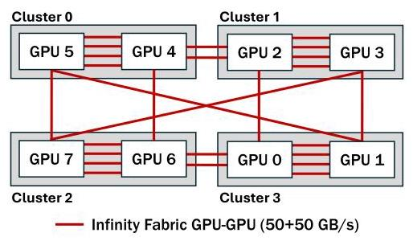
Figure 1: AMD GPUs in a Frontier node. GPUs within the same cluster are connected with Infinity Fabric GPU-GPU with a peak bandwidth of 200 GB/s. GPUs in different clusters are connected with Infinity Fabric GPU-GPU, where the peak bandwidth ranges from 50-100 GB/s.
Figure 1: 一个Frontier节点中的AMD GPU。同一集群内的GPU通过Infinity Fabric GPU-GPU互连，其峰值带宽为200 GB/s。不同集群中的GPU通过Infinity Fabric GPU-GPU互连，其峰值带宽范围为50-100 GB/s。
Stitching Network Traffic. To minimize network traffic, we propose our first technique, Stitching, which we apply to the lower-bandwidth network. By analyzing the network traffic, we identified that many flits contain empty bytes because the packet size is not always a multiple of the flit size. Many flits are even less than half full, causing a significant waste of bandwidth. To this end, we propose to stitch (i.e., combine) multiple flits' useful information (e.g., payloads, header) to fewer flits when possible, thereby reducing the overall number of flits and improving bandwidth utilization.
缝合网络流量。为减少网络流量，我们提出第一种技术——缝合（Stitching），并将其应用于低带宽网络。通过分析网络流量，我们发现许多微片包含空字节，因为数据包大小并非总是微片大小的整数倍。许多微片甚至不到半满，导致带宽严重浪费。为此，我们提出在可能时将多个微片的有用信息（如有效载荷、头部）缝合（即合并）到更少的微片中，从而减少微片总数并提高带宽利用率。
Selecting the flits to stitch has a significant performance implication and needs careful design. We take three approaches, including: (1) Traffic category-facilitated candidate selection. We categorize the network traffic into six distinct categories and find that packets of different categories (e.g., read response, page table response) usually have different packet sizes. Continuously stitching flits across certain categories can yield high utilization. (2) Flit Pooling. Flit Pooling delays the ejection of a flit into the network for an appropriate number of cycles, waiting for a suitable stitching candidate to arrive. (3) Prioritizing latency-sensitive packets. To prevent increased latency of Flit Pooling from negatively impacting certain applications, we identify latency-critical flits and exclude them from Flit Pooling.
选择要拼接的微片对性能影响显著，需要精心设计。我们采取三种方法，包括：（1）基于流量类别的候选选择。我们将网络流量分为六个不同类别，发现不同类别（如读响应、页表响应）的数据包通常具有不同的包大小。在特定类别之间连续拼接微片，可达到较高的利用率。（2）微片池化。微片池化将微片注入网络的时刻延迟适当的周期数，以等待合适的拼接候选到达。（3）优先处理时延敏感数据包。为防止微片池化增加的时延对某些应用产生负面影响，我们识别出时延关键的微片，并将其排除在微片池化之外。
Trimming Network Traffic. A major part of the inter-GPU data access happens between the L1 and the L2 cache (we assume L2 cache is shared across GPUs \(\left\lbrack {9,{24},{42},{71}}\right\rbrack )\) . The current cache design fetches entire cache lines to the L1 cache even if only a few bytes are needed, wasting bandwidth. We take advantage of the fact that, for many applications, GPU wavefronts (groups of 64 adjacent GPU threads) typically request fewer than 16 bytes of cache line data at a time. This insight allows us to trim parts of the network packet that carries data in lower-bandwidth networks, saving network bandwidth and reducing network traffic. Note that we only trim when the request has to traverse the lowest-bandwidth network. This ensures that we reduce network flits without significantly degrading L1 cache performance.
修剪网络流量。GPU间数据访问的很大一部分发生在L1和L2缓存之间（我们假设L2缓存在各GPU间共享 \(\left\lbrack {9,{24},{42},{71}}\right\rbrack )\)）。当前的缓存设计即使只需要几个字节，也会将整个缓存行取至L1缓存，浪费带宽。我们利用这样一个事实：对许多应用而言，GPU波前（64个相邻GPU线程组成的组）每次通常请求少于16字节的缓存行数据。这一洞察使我们能够在低带宽网络中裁剪携带数据的网络数据包的某些部分，从而节省网络带宽并减少网络流量。注意，我们仅在请求必须穿越最低带宽网络时才进行裁剪。这确保了我们在不显著降低L1缓存性能的前提下减少了网络微片的数量。
Sequencing Network Traffic. Not all packets have the same level of criticality in terms of performance impact. Our experiments revealed that end-to-end execution time is sensitive to the latency of page table walks (PTWs). This is because PTWs require fetching virtual-to-physical memory translations from the page table, placing these look-ups on the critical path of data accesses [7, 28, 44, 68, 81]. Moreover, we found that PTW-related packets (e.g., page table requests and responses) account for only a small fraction (on average 13%) of the total data traversing the lower-bandwidth network connecting the GPUs. These latency-critical PTW-related packets often get blocked behind data packets, degrading overall application performance. Based on these insights, we propose sequencing the network traffic by prioritizing PTW-related flits that stall read accesses over the lower-bandwidth network. This selective prioritization prevents data flits from blocking latency-critical PTW-related flits, allowing them to pass through lower-bandwidth networks smoothly and facilitating faster completion of PTWs, thus improving performance.
对网络流量进行排序。就性能影响而言，并非所有数据包的紧要程度都相同。我们的实验表明，端到端执行时间对页表遍历（PTW）的延迟很敏感。这是因为 PTW 需要从页表中获取虚拟到物理内存的地址转换，使得这些查找操作处于数据访问的关键路径上[7, 28, 44, 68, 81]。此外，我们发现与 PTW 相关的数据包（如页表请求和响应）仅占总数据流经连接 GPU 的低带宽网络的一小部分（平均 13%）。这些对延迟敏感的 PTW 相关数据包常常被数据包阻塞，降低了整体应用性能。基于这些观察，我们提出通过对低带宽网络中阻塞读访问的 PTW 相关微片进行优先级排序，来对网络流量进行排序。这种选择性优先化可防止数据微片阻塞对延迟敏感的 PTW 相关微片，使它们能够顺畅地通过低带宽网络，从而加速 PTW 的完成，提高性能。
We summarize the contributions of this work as follows:
我们将本文的贡献总结如下：
- We conduct an in-depth performance evaluation of a non-uniform bandwidth multi-GPU setup, demonstrating that bandwidth nonuniformity creates significant performance bottlenecks, particularly due to the constraints of lower-bandwidth networks.
- 我们对非均匀带宽的多GPU配置进行了深入的性能评估，表明带宽非均匀性会造成显著的性能瓶颈，尤其是由于低带宽网络的限制。
- We introduce NETCRAFTER, a novel approach designed to address network traffic inefficiencies in multi-GPU systems, particularly those constrained by lower-bandwidth networks. NETCRAFTER is built on three key observations: (a) not all flits fully utilize available network bandwidth, b) not all requested flits are even necessary - they are requested in the hope that they might be useful later, and (c) certain flits are more latency-sensitive and require prioritization. NETCRAFTER leverages these observations to a) reduce the network traffic (flits) by stitching compatible flits that are partly filled, b) trimming network traffic by not fetching flits that are unnecessary, and c) effectively managing network traffic by sequencing flits in the network in such a way that latency-sensitive flits reach their destinations faster.
- 我们提出了 NETCRAFTER，一种旨在解决多 GPU 系统中网络流量低效问题的新方法，尤其是在受较低带宽网络约束的系统中。NETCRAFTER 基于三个关键观察：(a) 并非所有微片都充分利用了可用网络带宽，(b) 并非所有请求的微片都是必要的——它们被请求是希望以后可能有用，以及 (c) 某些微片对延迟更敏感，需要优先处理。NETCRAFTER 利用这些观察来 (a) 通过拼接部分填充的兼容微片来减少网络流量（微片），(b) 通过不获取不必要的微片来修剪网络流量，以及 (c) 通过以某种方式对网络中的微片进行排序来有效管理网络流量，从而使延迟敏感的微片更快地到达目的地。
- To evaluate NETCRAFTER, we model a non-uniform bandwidth multi-GPU system (Figure 2), inspired by AMD's frontier compute node [26], using the MGPUSim [85] simulator. We evaluate NETCRAFTER across 15 GPU applications, achieving up to 64% speedup and an average of 16% over our baseline non-uniform multi-GPU configuration.
- 为评估 NETCRAFTER，我们受 AMD Frontier 计算节点 [26] 的启发，利用 MGPUSim [85] 模拟器，建模了一个非均匀带宽多 GPU 系统（图 2）。我们在 15 个 GPU 应用上对 NETCRAFTER 进行评估，相比基准非均匀多 GPU 配置，性能提升最高可达 64%，平均提升 16%。
2 Background
In this section, we describe our multi-GPU baseline architecture, followed by providing details on CTA scheduling, data placement, and virtual memory support. The evaluation methodology is discussed later in Section 5.
本节首先介绍我们基于的多GPU基线架构，随后详述CTA调度、数据放置和虚拟内存支持的细节。评估方法将在第5节讨论。
2.1 Baseline Architecture
Inspired by the Frontier supercomputer node [6, 18, 26], we model our baseline non-uniform bandwidth multi-GPU setup as shown in Figure 2. We assume a unified virtual memory (UVM)-managed multi-GPU system, where the GPUs share the unified virtual memory address space (more details in Section 2.3). Each GPU in our multi-GPU setup contains several Compute Units (CUs), also called Streaming Multi-processors (SMs) in NVIDIA terminology. It also has a highly banked L2 cache shared among all CUs, alongside HBM/GDDR memory stacks. The available threads in a program are grouped as Cooperative Thread Arrays (CTAs), also known as workgroups or thread blocks, each containing up to 1024 threads. Each CTA executes exclusively on a single compute unit (CU). Each CU is composed of multiple SIMD units. These units share an L1 cache and execute a group of threads in a lockstep manner. This group of threads is referred to as wavefront (warp in NVIDIA terminology) and its size is 64 in our setup. Memory accesses are coalesced using a hardware coalescer before reaching the L1 cache, with misses going to lower levels of the memory hierarchy.
受Frontier超级计算机节点[6, 18, 26]的启发，我们构建了基准非统一带宽多GPU系统模型，如图2所示。我们假设该系统采用统一虚拟内存（UVM）管理的多GPU架构，其中各GPU共享统一的虚拟内存地址空间（详细内容见第2.3节）。在我们的多GPU配置中，每个GPU包含多个计算单元（CU），在NVIDIA术语中也称为流式多处理器（SM）。同时，它还配备了一个高度分体的L2缓存，供所有CU共享，以及HBM/GDDR内存堆栈。程序中的可用线程被组织为协作线程阵列（CTA），也称为工作组或线程块，每个阵列最多包含1024个线程。每个CTA专门运行在一个计算单元（CU）上。每个CU由多个SIMD单元组成。这些单元共享一个L1缓存，并以锁步方式执行一组线程。这组线程被称为波前（wavefront，NVIDIA术语中称为warp），在我们的配置中其大小为64。内存访问在到达L1缓存之前通过硬件合并器进行合并，未命中则进入内存层级的更低层。
We assume that all GPUs in our multi-GPU setup share the L2 Cache and HBM/GDDR to aggregate the cache and memory capacity \(\left\lbrack {5,{17},{42},{61},{62},{71},{91},{98},{99}}\right\rbrack\) . Therefore, threads executing on a CU have access to the L2 cache and memory across all GPUs in the system. The GPUs are connected with a higher-bandwidth network within each cluster. Conversely, inter-cluster networks between GPUs operate at a lower bandwidth. \({}^{1}\) An access served by the local memory partition without using the GPU-GPU network is termed a local access. In contrast, an access that requires data from another GPU and must traverse the GPU-GPU network is termed a remote access. Therefore, in our setup, all inter-GPU accesses, including inter-GPU-cluster and intra-GPU-cluster accesses are referred to as remote accesses. For these remote accesses, the requested data is facilitated by a per-GPU Remote Direct Memory Access (RDMA) engine [9]. The accesses to L2 caches or HBMs on a remote GPU are slower than accesses to the local L2 cache or HBM. We assume that remote L2 data is not cached in the local L2 partition (however brought to L1 cache) [9, 24, 29, 56, 58, 59, 62, 71, 93].
我们假设多 GPU 系统中的所有 GPU 共享 L2 缓存和 HBM/GDDR，以聚合缓存和内存容量\(\left\lbrack {5,{17},{42},{61},{62},{71},{91},{98},{99}}\right\rbrack\)。因此，在 CU 上执行的线程可以访问系统中所有 GPU 的 L2 缓存和内存。每个集群内的 GPU 通过高带宽网络连接。反之，集群间的 GPU 网络运行在较低带宽下。\({}^{1}\) 由本地内存分区提供服务且未使用 GPU 间网络的访问称为本地访问。相反，需要从另一个 GPU 获取数据且必须穿越 GPU 间网络的访问称为远程访问。因此，在我们的设置中，所有跨 GPU 访问，包括跨 GPU 集群和集群内 GPU 间的访问，都称为远程访问。对于这些远程访问，请求的数据由每个 GPU 的远程直接内存访问（RDMA）引擎提供支持[9]。对远程 GPU 上 L2 缓存或 HBM 的访问比访问本地 L2 缓存或 HBM 更慢。我们假设远程 L2 数据不会缓存在本地 L2 分区中（但会被取到 L1 缓存中）[9, 24, 29, 56, 58, 59, 62, 71, 93]。
To understand the access flow in our baseline architecture, Figure 2 illustrates the steps involved in servicing an inter-GPU-cluster read request originating from GPU 3 (inside Cluster 1) towards GPU 1 (inside Cluster 0). First, threads within a wavefront generate accesses for addresses residing in the same cache line. The hardware coalesces these accesses into a single read request, which is then issued to the L1 cache (1). Second, a miss occurred in the L1 cache (2). The data required is located in GPU 1, necessitating an inter-GPU-cluster remote access to retrieve the data (3). Upon receiving the read request, GPU 1 services it by sending back the entire cache line data associated with the read request (4). The process from 4(a)-4(e) details the steps involved in returning the data from the remote GPU (GPU 1) to the requesting GPU (GPU 3): The RDMA engine on GPU 1 receives the cache line data as a read response packet (4a). The read response packet is segmented into flits before being transmitted through the network (4b). The flits are forwarded through the network (4c). GPU 3's RDMA engine receives the flits from the network (4d). The received flits are reassembled into a read response packet, which is then delivered to the requesting compute unit and cached in its local cache (4e). Overall, this access flow helps in establishing a baseline for future discussions.
为了理解基准架构中的访问流程，图2展示了服务来自GPU 3（集群1内）发往GPU 1（集群0内）的跨GPU集群读请求所涉及的步骤。首先，波前内的线程为驻留在同一缓存行中的地址生成访问。硬件将这些访问合并为一个读请求，然后发往L1缓存（1）。其次，L1缓存发生未命中（2）。所需数据位于GPU 1，因此需要跨GPU集群远程访问来获取数据（3）。接收到读请求后，GPU 1通过发回与该读请求关联的整个缓存行数据来提供服务（4）。从4(a)到4(e)的流程详细描述了将数据从远程GPU（GPU 1）返回到请求GPU（GPU 3）的步骤：GPU 1上的RDMA引擎将缓存行数据作为读响应包接收（4a）。读响应包被分段为微片，然后通过网络传输（4b）。微片在网络中转发（4c）。GPU 3的RDMA引擎从网络接收微片（4d）。接收到的微片重组为读响应包，随后交付给请求的计算单元并缓存在其本地缓存中（4e）。总体而言，该访问流程有助于为后续讨论建立基准。
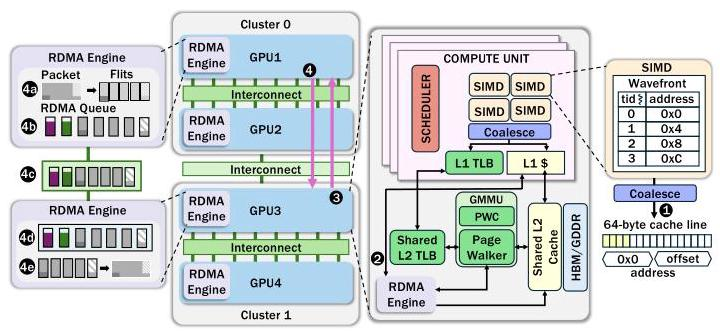
Figure 2: Illustrating baseline architecture and access flow. Our baseline multi-GPU setup pairs high-affinity GPUs with higher-bandwidth network, while groups of GPUs connect via lower-bandwidth network to enable scalable expansion. Access flow is shown for an inter-GPU-cluster remote request generated from GPU 3 towards GPU 1.
图2：展示基准架构与访问流程。我们的基准多GPU配置将高亲和性GPU与高带宽网络配对，而GPU组之间则通过低带宽网络连接以实现可扩展的扩展。图中显示了从GPU 3向GPU 1发出的跨GPU集群远程请求的访问流程。
2.2 CTA Scheduling and Data Placement
We assume a unified multi-GPU model where the CTAs of a kernel are launched across all the available GPUs [5, 9, 61, 85, 93, 96]. Recent works utilize compile-time static analysis of kernels to infer data access patterns, aiding in CTA scheduling and data placement. An example of such an approach is Locality-Aware Scheduling and Placement (LASP) by Khairy et al. [42], which leverages static index analysis to reduce remote memory accesses. LASP classifies kernels by data access patterns, schedules CTAs to GPUs, and places corresponding data pages locally to reduce remote accesses. Our baseline design adopts LASP's CTA scheduling and data placement strategies, which are also utilized in other recent works [29, 71].
我们假设采用统一的多GPU模型，其中内核的CTA在所有可用GPU上启动[5, 9, 61, 85, 93, 96]。近期研究利用编译时对内核的静态分析来推断数据访问模式，从而辅助CTA调度和数据放置。Khairy等人提出的局部感知调度与放置（LASP）[42]便是此类方法的一个实例，它通过静态索引分析来减少远程内存访问。LASP根据数据访问模式对内核进行分类，将CTA调度到不同GPU，并将相应数据页本地化放置，以减少远程访问。我们的基线设计采用了LASP的CTA调度和数据放置策略，这些策略也被其他近期研究所采用[29, 71]。
2.3 Virtual Memory Support
To support virtual memory, each CU in our design is equipped with a private L1 Translation Lookaside Buffer (TLB), while a shared L2 TLB and GPU Memory Management Unit (GMMU) serve all CUs within a GPU. The GMMU includes a Page Walk Cache (PWC), which accelerates page table walks (PTWs) by caching entries from the upper levels (levels 1-3) of the radix-tree page table. It also features a set of parallel page table walkers that handle virtual-to-physical address translation by traversing the page tables stored in HBM/GDDR memory. If the required page table entry (PTE) resides on GPUs in other clusters, these accesses may involve communication across the inter-GPU-cluster network.
为了支持虚拟内存，我们设计中的每个CU都配备了一个私有的L1转译后备缓冲器（TLB），而共享的L2 TLB和GPU内存管理单元（GMMU）则为同一GPU内的所有CU提供服务。GMMU包含一个页表遍历缓存（PWC），它通过缓存基数树页表高层级（第1至3级）的表项来加速页表遍历（PTW）。它还具备一组并行页表遍历器，这些遍历器通过遍历存储在HBM/GDDR内存中的页表来处理虚拟地址到物理地址的转换。如果所需的页表项（PTE）位于其他集群的GPU上，这些访问可能涉及通过GPU集群间网络的通信。
On a load or store request, the CU first queries its private L1 TLB for a virtual-to-physical address translation. If the translation is not found, the request is forwarded to the shared L2 TLB. Upon a L2 TLB miss, the PWC is accessed to perform a longest-prefix match on the Virtual Page Number (VPN), potentially resolving a portion of the PTW. Depending on the prefix match length, a PTW through the four-level page table may require 1 to 4 memory accesses, handled by dedicated page table walkers. Once the translation is obtained, it is inserted into both the L1 and L2 TLBs to avoid future misses, and then returned to the CU, which issues the load or store to the translated physical address. In our design, PTEs are also cached in the L2 cache along with data.
当收到加载或存储请求时，计算单元（CU）首先查询其私有的 L1 TLB 以进行虚拟到物理地址的转换。如果未找到相应的转换，请求将被转发到共享的 L2 TLB。在 L2 TLB 缺失的情况下，会访问页表遍历缓存（PWC），对虚拟页号（VPN）进行最长前缀匹配，可能解析出部分页表遍历。根据前缀匹配的长度，一次通过四级页表的遍历可能需要 1 到 4 次内存访问，这些访问由专用的页表遍历器处理。一旦获得地址转换，它会被插入到 L1 和 L2 TLB 中以避免未来的缺失，然后返回给 CU，由 CU 根据转换后的物理地址发出加载或存储请求。在我们的设计中，页表项（PTE）与数据一同缓存在 L2 缓存中。
\({}^{1}\) In this paper, we refer higher-bandwidth networks within a cluster as intra-GPU-cluster networks and lower-bandwidth networks across different clusters as inter-GPU-cluster networks.
\({}^{1}\) 在本文中，我们将集群内较高带宽的网络称为GPU集群内网络，将跨不同集群的较低带宽网络称为GPU集群间网络。
While LASP co-locates CTAs with their data to reduce remote accesses, it does not address PTE placement. We extend LASP by aligning PTE pages with data placement: each PTE page, mapping a 2MB virtual address region, is placed on the GPU where the first data page in that region resides. This ensures that data and its translation metadata are co-located, minimizing remote translation overhead. Our approach reflects Linux's NUMA-aware PTE placement [1] and aligns with prior GPU virtual memory work [71].
尽管 LASP 将 CTA 与其数据共同放置以减少远程访问，但它并未解决 PTE 放置问题。我们扩展 LASP，将 PTE 页与数据放置对齐：每个映射 2MB 虚拟地址区域的 PTE 页被放置在该区域中第一个数据页所在的 GPU 上。这确保了数据与其转换元数据共同放置，从而最小化远程转换开销。我们的方法反映了 Linux 的 NUMA 感知 PTE 放置 [1]，并与先前的 GPU 虚拟内存工作 [71] 保持一致。
3 Motivation and Analysis
In this section, we first quantify the challenges posed by nonuniform bandwidth in multi-GPU systems. Subsequently, we analyze network traffic across lower-bandwidth networks to reduce and manage that traffic.
在本节中，我们首先量化多GPU系统中非均匀带宽带来的挑战。随后，我们分析低带宽网络上的网络流量，以减少和管理这些流量。
3.1 Analyzing Network Bottleneck
To evaluate the impact of non-uniform bandwidth on multi-GPU performance, we compare our baseline setup with an ideal configuration, where all GPUs are connected via high-bandwidth networks (see Section 5 for details on the bandwidth numbers). Note that the ideal configuration is not practical; it indicates the optimization potential. As shown in Figure 3, the ideal network configuration achieves an average \({1.5} \times\) speedup over our baseline. the insights that guided the development of our optimization strategies aimed at mitigating and managing network traffic on these lower-bandwidth networks.
为了评估非均匀带宽对多 GPU 性能的影响，我们将基线设置与一种理想配置进行比较，后者所有 GPU 均通过高带宽网络连接（带宽数值详见第 5 节）。请注意，该理想配置并不实际；它指示了优化潜力。如图 3 所示，理想网络配置相比基线平均实现了 \({1.5} \times\) 加速。这些见解指导了我们的优化策略的开发，旨在缓解和管理这些低带宽网络上的网络流量。
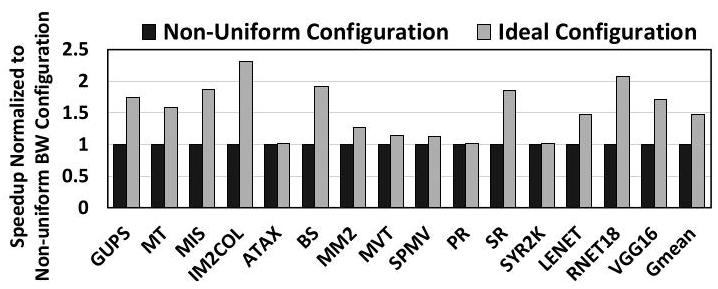
Figure 3: Performance of non-uniform multi-GPU system relative to an ideal setup with only high-bandwidth networks.
图 3：非均匀多 GPU 系统相对于仅配备高带宽网络的理想配置的性能
The substantial performance difference is primarily attributed to network bottleneck, as illustrated by high network utilization (which suggests significant congestion) across lower-bandwidth networks (see Figure 4). This heightened network utilization also contributes to higher average inter-GPU memory access latency, as evidenced in Figure 5, which consequently degrades overall system performance. These findings underscore how non-uniformity in the bandwidth exacerbates communication bottlenecks within multi-GPU systems, thereby significantly impacting application performance. Therefore, effective strategies to reduce and manage network traffic on lower-bandwidth networks connecting GPUs across clusters are critical. In the subsequent section, we delve into
巨大的性能差异主要归因于网络瓶颈，低带宽网络的高网络利用率（表明存在严重拥塞）即说明了这一点（见图4）。这种升高的网络利用率还导致平均跨GPU内存访问延迟增加，如图5所示，进而降低了整体系统性能。这些发现突显出带宽的非均匀性如何加剧多GPU系统内的通信瓶颈，从而显著影响应用性能。因此，采取有效策略来减少并管理跨集群连接GPU的低带宽网络上的网络流量至关重要。在下一节中，我们将深入探讨
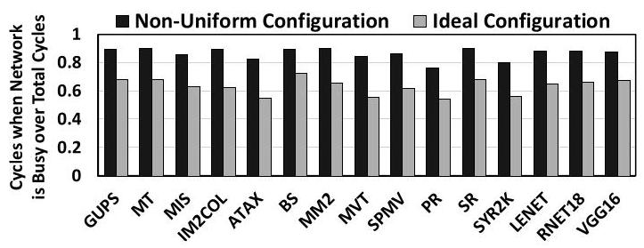
Figure 4: Network utilization of non-uniform & ideal config.
图4：非均匀与理想配置的网络利用率。
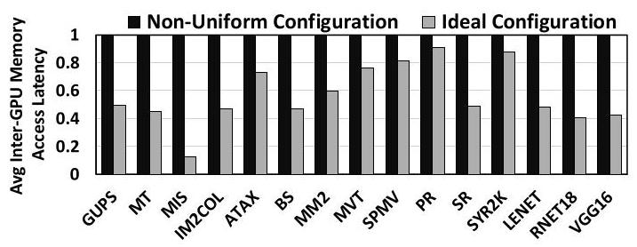
Figure 5: Average inter-GPU-cluster memory access latency of non-uniform and ideal configuration (normalized to the non-uniform configuration).
图5：非均匀配置与理想配置的平均GPU集群间内存访问延迟（以非均匀配置为基准归一化）
3.2 Reducing Network Traffic
Our first strategy reduces pressure on lower-bandwidth networks by minimizing network traffic, primarily through eliminating redundant or unnecessary data. This is driven by two key observations: Observation 1: Substantial empty bytes in network flits. We classify network traffic (illustrated in Table 1) generated by GPU accesses into six distinct types, each varying in packet size and content: 1) read request packet (containing an 8-byte address), 2) read response packet (containing 64 bytes of cache line data), 3) write request packet (containing both 64 bytes of cache line data and an 8-byte address), 4) write response packets (containing acknowledgment information, typically embedded in the packet header), 5) page table request packet (containing an 8-byte address), and 6) page table response packet (containing 8-byte physical address, significantly smaller than read response data for an entire cache line). Additionally, each packet includes a fixed 4-byte metadata header. The Bytes Required column in Table 1 reflects the total number of bytes needed by each packet type. padded if the data packet size is not a multiple of the native flit size, leading to unnecessary traffic load across the network and additional wasted bandwidth. The issue of wasted bandwidth due to fragmentation-caused by splitting packets into flits-has also been acknowledged in a recent prior work [62]. In our effort to optimize the lower-bandwidth networks between the GPUs, we identify these padded bytes as a source of redundant data. To quantify our findings, Figure 6 illustrates the percentage of total flits with either 25% or 75% padded bytes in the lower-bandwidth network. Our analysis reveals that, on average, 42% of flits in the lower-bandwidth network contain either 25% or 75% redundant (padded) data, revealing opportunities for traffic reduction in these networks. Observation 2: Partial cache-line utilization by wavefronts. We analyzed cache line utilization by all threads of a wavefront after coalescing. Figure 7 shows the fraction of inter-GPU-cluster read requests based on the cache line bytes required by the wavefront. The analysis reveals that many evaluated applications needed only 16 bytes or fewer from the 64-byte cache line fetched from the GPU. This results in inefficient use of network bandwidth, adding unnecessary traffic to already congested networks. This observation underscores another opportunity to optimize network traffic.
我们的第一项策略通过最小化网络流量来缓解低带宽网络的压力，主要方法是消除冗余或不必要的数据。这源于两项关键观察：
观察一：网络微片中存在大量空字节。我们将GPU访问产生的网络流量（如表1所示）划分为六种不同类型，每种在数据包大小和内容上有所差异：1) 读请求包（包含8字节地址），2) 读响应包（包含64字节缓存行数据），3) 写请求包（包含64字节缓存行数据和8字节地址），4) 写响应包（包含确认信息，通常嵌入在数据包头中），5) 页表请求包（包含8字节地址），6) 页表响应包（包含8字节物理地址，远小于整个缓存行的读响应数据）。此外，每个数据包都包含一个固定的4字节元数据头。表1中的“所需字节”列反映了每种数据包类型所需要的总字节数。如果数据包的大小不是原生微片大小的整数倍，则进行填充，这导致整个网络承受不必要的流量负载和额外的带宽浪费。因分片（将数据包拆分为微片）而导致的带宽浪费问题，近期的先前工作[62]也有提及。在优化GPU之间低带宽网络的过程中，我们将这些填充字节识别为冗余数据的来源。为量化我们的发现，图6展示了低带宽网络中带有25%或75%填充字节的微片占总微片数的百分比。我们的分析表明，低带宽网络中平均有42%的微片包含25%或75%的冗余（填充）数据，这为进行流量缩减提供了机会。
观察二：波前对缓存行的部分利用。我们分析了合并后波前所有线程的缓存行利用率。图7显示了基于波前所需缓存行字节数的GPU集群间读请求占比。分析表明，许多被评测的应用从GPU获取的64字节缓存行中，仅需要16字节或更少的数据。这导致网络带宽的低效使用，给本已拥塞的网络增加了不必要的流量。这一观察凸显了优化网络流量的另一机会。
Table 1: Categorizing 16B flits by type and size as observed in MGPUSim [85]. Each flit has multiple useless (padded) bytes.
表1：根据在MGPUSim [85]中观察到的类型和大小对16B flit进行分类。每个flit有多个无用（填充）字节。
| Request Type | Bytes Occupied | Bytes Required | Bytes Padded | Flits Occupied |
| Read Req | 16 | 12 | 4 | 1 |
| Write Req | 80 | 76 | 4 | 5 |
| Page Table Req | 16 | 12 | 4 | 1 |
| Read Rsp | 80 | 68 | 12 | 5 |
| Write Rsp | 16 | 4 | 12 | 1 |
| Page Table Rsp | 16 | 12 | 4 | 1 |
These distinctions highlight the diverse information carried by each packet type. When segmented into flits, these packets are
这些区别凸显了每种数据包类型所承载信息的多样性。当这些数据包被分割为微片时，它们会
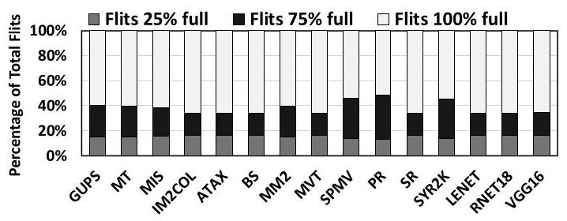
Figure 6: Distribution of flits categorized by occupancy levels.
图6：按占用水平分类的微片分布
3.3 Managing Network Traffic
Our second strategy to optimize lower-bandwidth networks between GPUs focuses on the efficient management of network flits. This approach aims to minimize total application execution time by handling flits based on their latency requirements. This approach is guided by the following two key observations:
我们优化 GPU 间低带宽网络的第二种策略侧重于网络微片的高效管理。该方法旨在通过根据微片的延迟需求对其进行处理，以最小化应用程序的总执行时间。该方法基于以下两个关键观察：
Observation 3: PTW-related flits lie on the critical path of data accesses. To efficiently manage network flits on the lower-bandwidth networks, it is crucial to identify and address the latency requirements of each flit category. We investigated the types of flits to classify them based on their impact on the overall performance. By prioritizing a constant number of each flit category and measuring the resulting performance, our experiments revealed that read PTW-related flits are more latency-critical and have a greater impact on application performance. This is because read PTWs require translating virtual addresses to physical addresses, which can stall critical data read accesses while the translation completes.
观察3：PTW相关的微片位于数据访问的关键路径上。为了有效管理低带宽网络上的网络微片，识别并解决每个微片类别的延迟需求至关重要。我们研究了微片的类型，根据它们对整体性能的影响进行分类。通过对每个微片类别固定数量的微片进行优先级排序并测量所得性能，我们的实验表明，与读PTW相关的微片对延迟更为敏感，对应用性能的影响更大。这是因为读PTW需要将虚拟地址转换为物理地址，这会在转换完成时阻塞关键的数据读访问。
Figure 8 quantifies our findings, comparing the performance of prioritizing read PTW-related accesses in the network versus prioritizing an equal number of data accesses. The results show that prioritizing data accesses over read PTW-related accesses worsened performance, while prioritizing read PTW-related accesses improved performance compared to the baseline. This shows that read PTW-related accesses are more latency-sensitive than data accesses, highlighting the benefit of prioritizing read PTW-related flits to improve performance over lower-bandwidth networks.
图8量化了我们的发现，比较了在网络中优先处理读PTW相关访问与优先处理同等数量数据访问的性能。结果表明，与基线相比，优先处理数据访问而非读PTW相关访问会恶化性能，而优先处理读PTW相关访问则提高了性能。这表明读PTW相关访问比数据访问对延迟更敏感，凸显了在低带宽网络上优先处理读PTW相关微片以提升性能的益处。
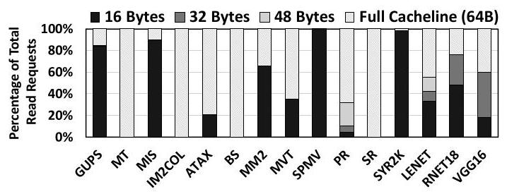
Figure 7: Categorization of inter-GPU-cluster read requests based on the number of bytes required from the cache line.
图7：根据缓存行所需字节数对GPU集群间读取请求的分类
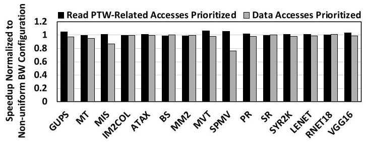
Figure 8: Performance characterization after prioritizing read PTW-related accesses and the same fraction of data accesses.
图 8：优先处理读 PTW 相关访问和同等比例的数据访问后的性能表征。
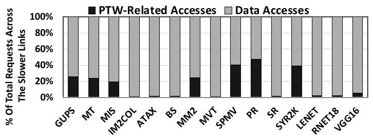
Figure 9: Ratio of data and PTW-related accesses in the lower-bandwidth network.
图9：低带宽网络中数据访问与PTW相关访问的比例。
Observation 4: PTW-related flits make up a small fraction of flits on lower-bandwidth networks. After identifying read PTW-related flits as latency-critical, it is crucial to assess their frequency and data volume relative to the total network flits before proposing an optimization strategy. Page table requests contain only the address, making them very small. Page table responses contain only the translated physical address and are significantly smaller than read response requests, which include the entire cache line. Thus, we found that Page table requests and responses occupy a small fraction of the total bytes in the network. Figure 9 shows the fraction of total traffic in the lower-bandwidth network that comprises PTW-related accesses (page table requests and responses) versus data accesses. The distribution indicates that PTW-related accesses occupy a small fraction of the total network accesses, averaging around \({13}\%\) of the total accesses. From our analysis, we conclude that PTW-related flits are not only latency-critical but also occupy a small fraction of the total flits by weight and volume, making them well-suited for prioritization in the network (i.e., reinforcing the previous observation 3).
观察 4：与页表遍历相关的微片在低带宽网络上仅占微片总数的一小部分。在确认读 PTW 相关微片为延迟关键型后，提出优化策略之前，必须评估它们相对于网络总微片的频率和数据量。页表请求仅包含地址，体积非常小。页表响应仅包含翻译后的物理地址，且比包含整个缓存行的读响应请求小得多。因此，我们发现页表请求和响应只占网络总字节数的一小部分。图 9 展示了低带宽网络总流量中，PTW 相关访问（页表请求和响应）与数据访问的占比分布。该分布表明，PTW 相关访问在网络总访问中只占很小部分，平均约占总访问量的 \({13}\%\)。从分析中我们得出，PTW 相关微片不仅是延迟关键型的，而且在数量和体积上都只占总微片的一小部分，这使得它们非常适合在网络中进行优先级调度（即强化了前面的观察 3）。
4 NetCrafter: Design and Implementation
Based on the observations discussed in the previous section, we propose NETCRAFTER - a unique combination of three key mechanisms (Stitching, Trimming, and Sequencing) that are applied together to optimize network traffic. In this section, we present their design and implementation details. It is important to note that our proposed methods are specifically applied to inter-GPU-cluster networks, with the design details and protocol modifications tailored for a simplified PCIe-like protocol. However, our proposed modifications can be adapted based on the protocol in use.
基于前一节讨论的观察结果，我们提出了 NETCRAFTER——这是一种将三种关键机制（拼接 Stitching、修剪 Trimming 和排序 Sequencing）独特地结合在一起的方案，它们协同工作以优化网络流量。在本节中，我们将介绍它们的设计与实现细节。需要特别指出的是，我们提出的方法专门应用于 GPU 集群间的网络，其设计细节和协议修改针对简化的类 PCIe 协议进行了定制。然而，我们提出的修改可以根据实际使用的协议进行适配。
4.1 Packet and Flit Structures
Figure 10(a) shows the baseline packet structure. We assume a simplified PCIe-style packet consists of a header and a payload. The header of each packet has essential information, alongside unused bits which we repurpose to realize our mechanisms. The payload has the data. We assume the header is 12 bytes \({}^{2}\) , out of which 4 bytes are metadata and the remaining 8 bytes are for the address. The 4-byte header metadata contains a 5-bit type field indicating the packet type, destination routing information, and a unique identification tag (ID) for each packet. Out of 64 address bits (8 bytes), 48 bits are used for memory address in a PCIe-style packet, and the remaining 16 bits are unused.
图 10(a) 展示了基线数据包结构。我们假设一个简化的 PCIe 风格数据包由一个头部和一个有效载荷组成。每个数据包的头部包含基本信息以及未使用的位，我们重新利用这些位来实现我们的机制。有效载荷承载数据。我们假设头部为 12 字节 \({}^{2}\)，其中 4 字节为元数据，其余 8 字节为地址。4 字节的头部元数据包含一个 5 位的类型字段，用于指示数据包类型、目的路由信息以及每个数据包的唯一标识标签（ID）。在 64 个地址位（8 字节）中，48 位用于 PCIe 风格数据包中的内存地址，其余 16 位未被使用。
A packet is segmented into fixed-size flits before being transmitted across the network. Figure 11(a) shows various packet types and how they are divided into flits. For example, the Read-Response packet is divided into five flits: the first flit contains the header and partial payload data, followed by flits consisting of the remaining payload data. The fifth (final) flit also has empty bytes. Further, different types of network flits contain varying amounts of empty bytes, which are padded with redundant data before transmission, as discussed in Section 3.2. In our simulated system, the Read-Response packet is 80 bytes (5 flits) out of which only 68 bytes in total are occupied by the header (dark colors in Figure 11(a)) and payload (light colors in Figure 11(a)). The remaining 12 bytes are empty (white-gray patterns in Figure 11(a)), which are filled by redundant data to pad the empty bytes in the flit.
数据包在通过网络传输之前，会被分割成固定大小的微片。图11(a)展示了各种数据包类型及其如何被划分成微片。例如，读响应数据包被分为五个微片：第一个微片包含头部和部分有效载荷数据，后续微片则包含剩余的有效载荷数据。第五个（最后一个）微片同样存在空字节。此外，不同类型的网络微片包含的空字节数量各不相同，在传输前这些空字节会像第3.2节讨论的那样被填充冗余数据。在我们的模拟系统中，读响应数据包为80字节（5个微片），其中头部（图11(a)中的深色部分）和有效载荷（图11(a)中的浅色部分）总共仅占用68字节。剩余12字节为空（图11(a)中的灰白图案），这些空字节会被冗余数据填充，以补足微片中的空位。
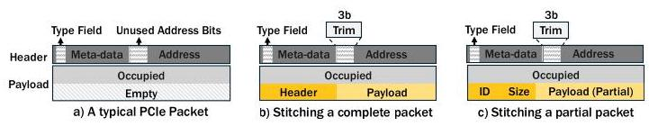
Figure 10: a) A simplified PCIe packet structure, b) NetCrafter packet stitched with another (whole) packet, c) NetCrafter packet stitched with another (partial) packet. Stitched packets are shown in yellow.
图10：a) 简化的PCIe数据包结构，b) NetCrafter数据包与另一个（完整）数据包拼接，c) NetCrafter数据包与另一个（部分）数据包拼接。拼接的数据包以黄色显示。
4.2 Design of Stitching Mechanism
To address the identified flit-level inefficiency, we propose Stitching, which reduces overall network traffic by sending useful data from other outstanding packets instead of redundant data in the network.
为解决已发现的微片层面的低效问题，我们提出拼接技术，通过发送来自其他待处理数据包中的有用数据，而非网络中的冗余数据，来减少整体网络流量。
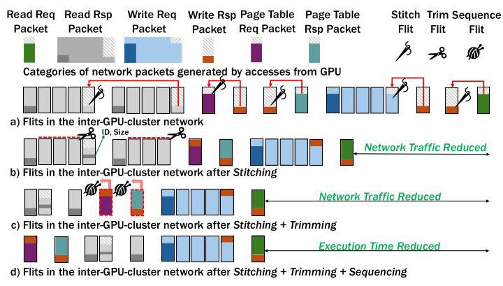
Figure 11: Reducing & managing network traffic with NetCrafter. Dark colors represent headers; light colors represent payloads & white-gray patterns represent empty bytes.
图 11：利用 NetCrafter 减少并管理网络流量。深色表示头部；浅色表示有效载荷，白灰色图案表示空字节。
When a flit (called parent flit) is retrieved from the queue to be sent into the network, it is assessed for the number of empty bytes and its destination. We then search for stitching candidates in the queue that meet specific criteria: (1) the candidate flit should contain fewer than or equal to the number of empty bytes in the parent flit, ensuring a fitting merge, and (2) the candidate flit should share the same destination.
当一个微片（称为父微片）从队列中取出准备发送到网络中时，会评估其空字节数和目的地。然后，我们在队列中搜索符合特定条件的缝合候选微片：（1）候选微片包含的空字节数应少于或等于父微片中的空字节数，以确保合适的合并；（2）候选微片应共享相同的目的地。
Once an ideal candidate flit is identified, it is stitched into the parent flit using one of two techniques. (1) If the candidate flit belongs to a larger packet and contains only payload data, we first prepend it with metadata-specifically, an identification tag (ID) and size field (Size)-both inferred from the header of the original packet. This augmented flit is then stitched into the parent flit. This enables the receiver side to correctly reassemble the candidate flit with its remaining packet using the ID, and to accurately un-stitch it using the Size field. (2) If the candidate flit contains a complete packet (including both header and payload), it is stitched directly without additional bytes. The offset of the stitched packet can be determined by inferring the size of the parent packet from its header. Multiple candidates can be stitched into the parent flit, as long as their total size fits within the parent flit's remaining space.
一旦识别出理想的候选微片，就会通过两种技术之一将其缝合到父微片中。(1) 如果候选微片属于一个更大的数据包且仅包含有效载荷数据，我们首先在其前面添加元数据——具体来说，是一个标识标签（ID）和大小字段（Size）——两者均从原始数据包的头部推断得出。然后，这个扩充后的微片被缝合到父微片中。这使得接收端能够利用ID正确地将候选微片与其剩余的数据包重新组合，并利用Size字段准确地将其拆分出来。(2) 如果候选微片包含一个完整的数据包（包括头部和有效载荷），则直接缝合，无需额外字节。缝合数据包的偏移量可以通过从父微片头部推断其大小来确定。只要总大小适合父微片的剩余空间，就可以将多个候选微片缝合到父微片中。
Figure 11(b) shows the benefits of Stitching when applied to the stream of flits shown in Figure 11(a). Five different kinds of stitching scenarios are shown. In the first scenario, the last flits in two back-to-back read response packets have empty bytes (e.g., contain the trailing end of data from a read response packet) and hence are the candidates for stitching. However, given that header information is not available in the last flit of the second read response packet, we will need additional information to stitch it so that it can be identified during un-stitching. Figure 11(b) shows the status of flits after stitching is performed, along with some additional bytes that contain an ID and a Size field. In the remaining four scenarios, stitching between compatible flits is straightforward, as the entire packet-header and payload- is available, requiring no additional metadata to be added. Overall, as noticed from Figure 11(b), significant network traffic can be reduced with Stitching.
图11(b)展示了将缝合技术应用于图11(a)所示的微片流所带来的好处。图中展示了五种不同的缝合场景。在第一种场景中，两个连续的读响应包中的最后一个微片存在空字节（例如，包含读响应包数据的尾部），因此成为缝合的候选对象。然而，由于第二个读响应包的最后一个微片中不包含头部信息，要对其进行缝合就需要额外的信息，以便在解缝合时能够识别。图11(b)展示了进行缝合操作后的微片状态，以及一些包含ID和大小字段的额外字节。在其余四种场景中，兼容微片之间的缝合则很直接，因为整个包的头部和有效载荷都可用，无需添加额外的元数据。总体而言，从图11(b)可以看出，通过缝合可以显著减少网络流量。
Packet Structure that Supports Stitching. To implement our mechanisms, the communication protocol needs minimal updates to the packet structure (see Figure 10(a)). We leverage unused encoding (out of several unused combinations available [62]) of the type field in the PCIe-style packet header to denote a stitched flit. Figure 10(b) and Figure 10(c) show two types of stitched packets that incorporate these changes. The payload of a parent flit is modified by including stitching candidate flits as multiple sub-packets concatenated within a single transaction. In the first type, a complete packet is stitched (highlighted in yellow) with the parent flit. In the second type, only part of the packet is stitched (highlighted in yellow), which does not contain its own header. Therefore, we include additional information (ID and Size of partial payload). Note that NETCRAFTER stitches only those flits that follow the same route, allowing them to share header fields and simplifying the design.
支持拼接的数据包结构。为实现我们的机制，通信协议需对数据包结构进行最小限度的更新（见图10(a)）。我们利用 PCIe 式数据包头中类型字段的未使用编码（来自若干可用的未使用组合之一[62]）来指示拼接微片。图10(b)和图10(c)展示了合并这些更改的两种拼接数据包类型。父微片的有效载荷通过将拼接候选微片作为多个子数据包串联在单个事务内来进行修改。在第一种类型中，一个完整的数据包与父微片拼接（以黄色高亮显示）。在第二种类型中，仅数据包的一部分被拼接（以黄色高亮显示），该部分不包含自身包头。因此，我们包含了额外信息（部分有效载荷的ID和大小）。请注意，NETCRAFTER 仅拼接那些沿相同路由传输的微片，使它们能够共享包头字段，从而简化了设计。
\({}^{2}\) Per [12,62,70], the packet consists of a header (up to 16 bytes),12 bytes of additional information (e.g., CRCs, framing, and sequence number), and payload. To be compatible with the MGPUSim simulation framework, we are not considering additional information and using the header size of 4 or 12 bytes based on packet type: 4 bytes for Read Rsp and Write Rsp and 12 for others types (Table 1).
\({}^{2}\) 根据文献[12,62,70]，数据包由头部（最多 16 字节）、12 字节的附加信息（例如 CRC、帧定界和序列号）以及有效载荷组成。为兼容 MGPUSim 仿真框架，我们不考虑附加信息，并根据数据包类型使用 4 或 12 字节的头部：读响应和写响应为 4 字节，其他类型为 12 字节（表 1）。
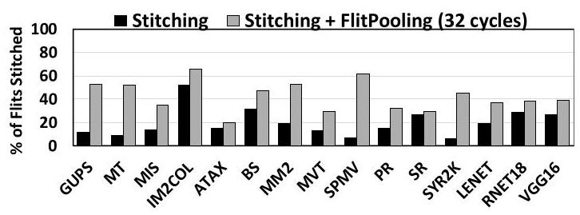
Figure 12: Percentage of total flits stitched before and after application of Flit Pooling with Stitching. Flit Pooling significantly improves the percentage of total stitched flits.
图12：应用Flit池化与拼接前后，总flit中被拼接的百分比。Flit池化显著提高了被拼接flit的总百分比。
Optimization I: Flit Pooling. While flit Stitching is promising in reducing overall traffic, our experiment indicates that only a small fraction of packets can be stitched (see Figure 12). This limitation arises from the limited availability of suitable stitching candidates in the queue under study at the time of flit ejection. To enhance the opportunity of stitching, we introduce Flit Pooling. Leveraging the latency tolerance of GPU architectures, Flit Pooling temporarily postpones the ejection of a network flit if no suitable stitching candidate is found. This delay allows more time for a suitable stitching candidate to arrive in the queue. After the delay period, the deferred flit is re-evaluated for potential stitching. If a suitable candidate is found, stitching is performed; otherwise, the flit is ejected without stitching. We performed a design space exploration by varying the delay period and measuring its impact on overall performance (Figure 18). The delay period in the final design was optimized to achieve the best trade-off between latency increase and improved stitching percentage.
优化I：微片池化。尽管微片拼接在减少总体流量方面颇具前景，但我们的实验表明，只有少部分数据包能够被拼接（见图12）。这一限制源于在微片弹出时，所考察的队列中缺少合适的拼接候选对象。为增加拼接机会，我们引入了微片池化技术。利用GPU架构对延迟的容忍性，微片池化会在未找到合适拼接候选时，暂时推迟网络微片的弹出。这一延迟为合适的拼接候选到达队列留出了更多时间。延迟期结束后，被推迟的微片会重新接受拼接评估。若找到合适候选，则执行拼接；否则，该微片将直接弹出而不进行拼接。我们通过改变延迟时长，并衡量其对整体性能的影响，进行了设计空间探索（图18）。最终设计中的延迟时长经过优化，以实现延迟增加与拼接比例提升之间的最佳权衡。
Optimization II: Selective Flit Pooling. While GPUs are generally not sensitive to latency, they are sensitive to the latency of certain traffic categories (see Observation 3). To ensure broad applicability and minimal disruption to critical applications, we employ Selective Flit Pooling. This approach exempts latency-sensitive flits from the Flit Pooling delay. During Selective Flit Pooling, the flit undergoes assessment to determine if it is latency-critical. If the flit is considered latency critical, we exclude it from Flit Pooling, otherwise, the ejection is delayed temporarily while subsequent flits in the queue are processed. Currently, we consider all the PTW-related flits (see Figure 8) latency critical, as guided by Observation 3. Selective Flit Pooling mitigates the performance degradation caused by increased latency associated with Flit Pooling. This improvement is demonstrated later in Section 5.
优化二：选择性微片暂存。尽管GPU通常对延迟不敏感，但对特定流量类别的延迟较为敏感（见观察3）。为确保广泛适用性并最大限度减少对关键应用的影响，我们采用了选择性微片暂存机制。该方法可避免将延迟敏感的微片纳入微片暂存延迟流程。在选择性微片暂存过程中，系统会评估微片是否为延迟关键型——若判定为延迟关键型，则将其排除在微片暂存之外；否则将暂时延迟其发出，同时继续处理队列中的后续微片。依照观察3的指导原则，当前我们将所有页表遍历相关微片（见图8）均视为延迟关键型。选择性微片暂存能够缓解因微片暂存延迟增加而导致的性能下降，该改进效果将在第5节中予以验证。
4.3 Design of Trimming and Sequencing Mechanisms
In Section 3.2, we described that threads within a wavefront often do not require all bytes in a 64-byte cache line fetched from a remote GPU. To address the inefficiencies of transmitting unnecessary bytes, especially over lower-bandwidth networks, we propose Trimming. Trimming involves modifying network packets to eliminate superfluous data. When the remote GPU hosting the cache line is ready to satisfy the packet request, we analyze it to determine the exact number of bytes requested by the wavefront. If this number is 16 bytes or fewer, and the response packet has to traverse an inter-GPU-cluster network, we trim the packet to include only the necessary bytes, discarding the excess. If the number is above 16 bytes, or the packet won't traverse an inter-GPU-cluster network, we do not discard any flits to preserve spatial locality advantages. Trimming packets minimizes the transmission of redundant data, which previously polluted the network channel. Figure 11(c) shows the benefits of Trimming, which discards the flits that are not required by the application. For example, we show two such scenarios where a number of flits (payload related) in two Read Response packets are not required and hence not sent via the network, thereby reducing network traffic.
在第3.2节中，我们描述了波前内的线程通常不需要从远程GPU获取的64字节缓存行中的所有字节。为了解决传输不必要字节的低效问题，特别是在低带宽网络上，我们提出了裁剪（Trimming）技术。裁剪涉及修改网络数据包以消除多余数据。当托管缓存行的远程GPU准备满足数据包请求时，我们会分析该请求，以确定波前请求的确切字节数。如果该数目为16字节或更少，并且响应数据包必须穿越GPU集群间网络，我们裁剪该数据包，仅包含必要字节，丢弃多余部分。如果数目超过16字节，或者数据包不会穿越GPU集群间网络，我们不会丢弃任何flit，以保留空间局部性优势。裁剪数据包最大限度地减少了冗余数据的传输，这些数据之前会污染网络通道。图11(c)展示了裁剪的好处，它丢弃了应用程序不需要的flit。例如，我们展示了两种场景，其中两个读响应数据包中的一些flit（与负载相关）是不需要的，因此不会通过网络发送，从而减少了网络流量。
Packet Structure that Supports Trimming. The communication protocol requires minimal updates to the packet structure (see Figure 10(a)) to support trimming. NETCRAFTER's updated packet format (see Figure 10(b) and (c)) re-purposes three unused bits (Trim) in the address field [46, 50, 52]. One bit specifies whether the request needs 16 bytes or a full cache line of data, while the other two bits indicate the offset within the 64B cache line.
支持修剪的数据包结构。通信协议仅需对数据包结构进行最小更新（参见图10(a)）以支持修剪。NETCRAFTER 更新后的数据包格式（参见图10(b)与(c)）重新利用了地址字段中三个未使用的位（Trim）[46, 50, 52]。其中一位指定该请求需要 16 字节还是完整的缓存行数据，另外两位指示 64B 缓存行内的偏移量。
Implications of Trimming on Cache Design. To complement our trimming optimization, we take advantage of the concept of sectored cache design [35, 74], which has been explored in the context of a single-GPU scenario. This cache breaks each cache line into smaller, independently addressable sectors or sub-blocks of 16 bytes - the same granularity at which Trimming brings data into the cache. On an L1 cache miss that requires an inter-GPU-cluster request to service the miss, only the necessary sectors are loaded from the main memory of the relevant inter-cluster-GPU into the L1 cache, reducing data transfer and enhancing the efficiency of our proposed Trimming technique.
修剪对缓存设计的影响。为了辅助我们的修剪优化，我们利用了分区缓存设计[35, 74]的概念，该概念已在单GPU场景下进行了探索。这种缓存将每条缓存行划分为更小的、可独立寻址的扇区或子块，大小为16字节——这与修剪将数据带入缓存的粒度相同。对于需要跨GPU集群请求来服务的L1缓存未命中，仅从相关跨集群GPU的主内存中加载必要的扇区到L1缓存中，从而减少了数据传输，并提高了我们所提出的修剪技术的效率。
Impact of Trimming on the Cache Performance. Trimming does not entirely negate the spatial locality benefits of natural fetching of the cacheline. In NetCrafter, a full cache line is always retrieved from the L2 cache for all accesses. However, the NetCrafter controller employs Trimming only to inter-cluster GPU requests. For intra-cluster GPU requests, where bandwidth is higher, the standard fetching mechanism remains unchanged, allowing full cache line retrieval without introducing additional overhead.
修剪对缓存性能的影响。修剪并不会完全抵消自然获取缓存行所带来的空间局部性优势。在 NetCrafter 中，对所有访问都会从 L2 缓存中获取完整的缓存行。但是，NetCrafter 控制器仅对跨集群 GPU 请求应用修剪。对于集群内 GPU 请求，由于带宽更高，标准的获取机制保持不变，允许完整获取缓存行而不引入额外开销。
Design of Sequencing Mechanism. Based on our analysis in section 3.3, we found that PTW-related flits are not only latency-sensitive but also constitute a small fraction of total network flits in terms of both their weight and volume. Given these insights, we propose a strategy termed Sequencing. This approach prioritizes the handling of PTW-related accesses that potentially delay read requests, ensuring they are addressed promptly. Since the PTW-related accesses occupy a small proportion of accesses on lower-bandwidth networks, prioritizing them there does not adversely affect the queuing latency for data requests. Instead, it optimizes traffic flow, thereby enhancing overall performance without significant trade-offs. Figure 11(d) provides a high-level overview of sequencing, illustrating how PTW-related flits are prioritized over other network flits to minimize the end-to-end execution time of applications (implementation details are up next).
排序机制的设计。基于第3.3节的分析，我们发现PTW相关的flit不仅对延迟敏感，而且就其权重和数量而言，在网络总flit中仅占很小比例。鉴于这些认识，我们提出一种称为排序的策略。该方法优先处理那些可能延迟读请求的PTW相关访问，确保它们得到及时响应。由于PTW相关访问在低带宽网络上占据的比例很小，在那里对它们进行优先处理不会对数据请求的排队延迟产生不利影响。相反，它优化了流量流动，从而在无需显著权衡的情况下提升整体性能。图11(d)给出了排序的高层概览，展示了如何将PTW相关flit优先于其他网络flit，以最小化应用程序的端到端执行时间（实现细节接下来介绍）。
4.4 Implementation of NetCrafter
The overall architecture of NETCRAFTER is encapsulated within the NETCRAFTER Controller, as illustrated in Figure 13. The NETCRAFTER controller performs Stitching, Trimming, and Sequencing and is located inside each cluster's switch. It comprises of three key components: 1) a Trim Engine for Trimming, 2) a Cluster Queue (CQ), and 3) a Stitching Engine for Stitching.
NETCRAFTER 的整体架构封装在 NETCRAFTER 控制器中，如图 13 所示。NETCRAFTER 控制器执行拼接、修剪和排序，位于每个集群的交换机内部。它由三个关键组件组成：1）用于修剪的修剪引擎，2）一个集群队列（CQ），以及 3）用于拼接的拼接引擎。
Trim Engine. It is responsible for refining network packets by Trimming read response packets to match the specific bytes requested by the GPU. As previously discussed, we modify the packet structure to include trim bits. These bits indicate if Trimming is required and, if so, specify the offset within the 64-byte cache line. The Trim Engine uses the pkt.trim bits (shown in Figure 13) as control signals to trim read response packets and outputs them to the Stitching Engine for further processing.
修剪引擎。它负责通过修剪（Trimming）读取响应数据包以匹配 GPU 请求的特定字节来精炼网络数据包。如前所述，我们修改了数据包结构，加入了修剪位。这些位指示是否需要修剪，如果需要，则指定 64 字节缓存行内的偏移量。修剪引擎使用 pkt.trim 位（如图 13 所示）作为控制信号来修剪读取响应数据包，并将其输出到拼接引擎（Stitching Engine）进行进一步处理。
Cluster Queue (CQ). It is an SRAM structure located at the inter-GPU-cluster network egress port. It selectively buffers flits destined to traverse lower-bandwidth networks, preparing them for stitching. The Cluster Queue uses a two-level virtual structure: the first level, CQ.dst, groups flits by destination cluster, while the second level, CQ.type, subdivides each CQ.dst by request type (as defined in Table 1). The request type determines the number of empty bytes available for stitching. The appropriate cluster queue partition for a flit is selected based on control signals (pkt.dst and pkt.type) from the packet, specifying the destination cluster and packet type. A round-robin scheduler allocates service turns across these partitions. Each Cluster Queue entry occupies 16 bytes, the fixed size of each flit in our network.
集群队列（CQ）是一种SRAM结构，位于GPU集群间网络出口端口。它选择性地缓冲将要穿越低带宽网络的微片，为微片缝合做准备。集群队列采用两级虚拟结构：第一级CQ.dst按目标集群对微片进行分组，第二级CQ.type则按请求类型（如表1所定义）对每个CQ.dst做进一步细分。请求类型决定了可用于缝合的空闲字节数量。某一微片对应的集群队列分区，根据来自数据包的控制信号（pkt.dst和pkt.type）进行选择，这些信号指定了目标集群和数据包类型。轮询调度器在这些分区之间分配服务机会。每个集群队列条目占用16字节，即我们网络中每个微片的固定大小。
Stitching Engine. The stitching engine operates on two flits: a parent flit and a stitching candidate flit. It first examines the candidate to determine whether it is a complete packet-containing both header and payload-or a partial packet consisting only of payload. If the candidate is a complete packet, it is directly stitched into the parent flit. Otherwise, if the candidate includes only a payload segment, the engine appends lightweight metadata: a unique ID identifying the original packet and a Size field indicating the number of bytes included. Finally, to signal that the resulting packet contains stitched content, the NETCRAFTER engine repurposes an otherwise unused combination in the 5-bit type field of the parent packet header [62]. The final output is a stitched flit, ready for transmission across the network. The stitching engine at the receiver end also performs un-stitching once a stitched flit reaches its destination. It begins by examining the 5-bit type field in the flit header to determine whether the flit contains stitched data. If the flit is identified as stitched-using the repurposed unused type value-it is flagged for further processing. The engine then parses the flit to extract metadata associated with each stitched flit, including the ID and Size fields. This information enables the engine to locate and separate all constituent flits embedded within the stitched packet. Finally, the engine reunites each extracted flit with the remaining portion of its original packet by matching the ID appended in the parent flit with the ID of the remaining packet of the stitching candidate from their header.
拼接引擎。拼接引擎对两个微片进行操作：一个父微片和一个拼接候选微片。它首先检查候选微片，以确定该候选是一个同时包含报头和有效载荷的完整数据包，还是一个仅由有效载荷构成的部分数据包。如果候选是一个完整数据包，则直接拼接到父微片中。否则，如果候选只包含有效载荷片段，引擎会附加轻量级元数据：一个标识原始数据包的唯一 ID，以及一个指示所含字节数的 Size 字段。最后，为了标示生成的数据包含有拼接内容，NETCRAFTER 引擎重用了父数据包报头中 5 位类型字段的一个原本未使用的组合 [62]。最终输出是一个已拼接微片，准备在网络中传输。接收端的拼接引擎也会在拼接微片到达目的地后执行去拼接操作。它首先检查微片报头中的 5 位类型字段，以确定该微片是否包含拼接数据。如果该微片被识别为已拼接——通过所使用的重定义未使用类型值——则被标记为需要进一步处理。然后，引擎解析该微片，提取与每个被拼接微片相关的元数据，包括 ID 和 Size 字段。这些信息使引擎能够定位并分离出嵌入在拼接数据包中的所有组成微片。最后，引擎通过将父微片中附加的 ID 与来自拼接候选微片报头的剩余数据包 ID 进行匹配，将提取出的每个微片与其原始数据包的剩余部分重新组合。
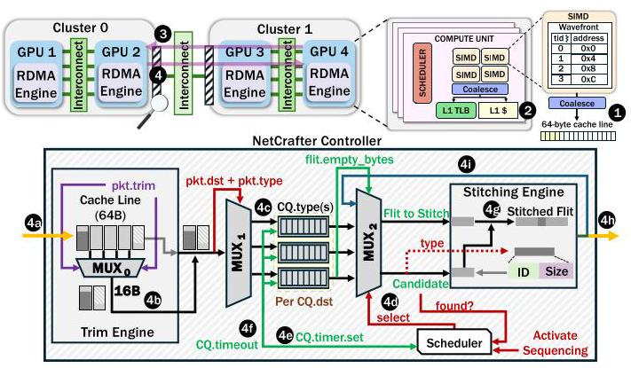
Figure 13: NETCRAFTER in Action.
图13：NETCRAFTER 的实际运行
Putting it all Together. Figure 13 provides a step-by-step example of the NETCRAFTER workflow. A wavefront from Cluster 1 GPU 4 generates a read request for an address in Cluster 0 GPU 2, requiring data from the first 16 bytes of the cache line (1). The L1 cache misses this address, prompting a remote request to GPU 2
将所有内容结合起来。图13提供了NetCrafter工作流程的逐步示例。来自集群1 GPU 4的一个波前对集群0 GPU 2中的一个地址生成读请求，需要该缓存行前16字节的数据(1)。L1缓存未命中该地址，促使向GPU 2发出远程请求
(2). The request is then forwarded to GPU 2 through the network (3). GPU 2 services the read request, generates a read response with a 64-byte cache line, and sends the data back to GPU 4 (4).
(2). 然后，该请求通过网络转发到 GPU 2 (3)。GPU 2 处理该读取请求，生成一个包含 64 字节缓存行的读取响应，并将数据发送回 GPU 4 (4)。
To illustrate our design, we detail the steps for sending the read response packet from GPU 2 to GPU 4. The packet is partitioned into flits, which are processed by the NETCRAFTER controller before being ejected into the network (4a). In this case, the read response required only 16 bytes from the total 64 bytes fetched, so the Trimming engine examines the packet, checks its destination, and trims the remaining bytes since it is traversing the lower-bandwidth network (4b). Each flit is placed into the appropriate cluster queue partition based on its destination and type. The type determines the empty bytes within the flit, except for PTW-related flits, which are placed in a separate queue (4c). The flit is retrieved based on the cluster queue's turn, scheduled in a round-robin fashion (with a bias towards prioritizing the cluster queue containing PTW-related flits). The retrieved flit passes through a multiplexer, which also forwards the stitching candidate based on the first flit's empty bytes (4d). If no candidate is found for stitching, a signal is sent to the scheduler, setting a timer for the queue that ejected the flit to be stitched. This timer delays retrieval from that cluster queue until it expires. The timer is never set for the PTW-related cluster queue, as PTW-related flits are latency-critical and exempt from the timer. If no candidate is found for PTW-related flits, they are ejected regardless (4e). After the timeout, the scheduler resumes the cluster queue's turn (4f). When a stitching candidate is found, the stitching engine evaluates it. If the candidate contains both a header and payload, the engine stitches both flits. If the candidate only contains the payload, the stitching engine generates an ID and a Size field and appends it with the stitched flit (4g). The flit is pushed out of the network after our techniques are applied (4h). Note that after stitching, the flit can still be stitched again if enough empty bytes remain (4i).
为了说明我们的设计，我们详细描述了将读响应数据包从 GPU 2 发送到 GPU 4 的步骤。该数据包被划分成多个微片，这些微片在注入网络之前先由 NETCRAFTER 控制器处理（4a）。在本例中，该读响应仅需要所取 64 字节中的 16 字节，因此修剪引擎检查该数据包，确认其目的地，并修剪掉其余字节，因为该包正穿越较低带宽的网络（4b）。每个微片根据其目的地和类型被放入相应的簇队列分区。类型决定了微片内的空字节数量，但与 PTW 相关的微片除外，它们会被放入一个单独的队列（4c）。微片按照簇队列的轮次被取出，以轮询方式调度（偏向优先处理包含 PTW 相关微片的簇队列）。取出的微片通过一个多路复用器，该复用器还根据第一个微片的空字节数转发缝合候选对象（4d）。如果未找到缝合候选，则向调度器发送一个信号，为该弹出微片所在队列设置一个定时器以待缝合。该定时器会延迟从该簇队列的取出操作，直到超时。对于 PTW 相关的簇队列，绝不会设置该定时器，因为 PTW 相关微片对延迟敏感，且不受此定时器限制。如果 PTW 相关微片未找到候选，则无论如何都会被立即弹出（4e）。超时后，调度器恢复该簇队列的轮次（4f）。当找到缝合候选时，缝合引擎对其进行评估。如果候选对象同时包含头部和有效载荷，则引擎将这两个微片缝合。如果候选对象仅包含有效载荷，则缝合引擎会生成一个 ID 和 Size 字段，并将其附加到缝合后的微片中（4g）。在我们的技术应用后，微片被推出网络（4h）。注意，在缝合之后，如果仍有足够的空字节，该微片仍可被再次缝合（4i）。
4.5 Other Design Considerations
Hardware Overhead of NetCrafter. Each GPU cluster is equipped with a NETCRAFTER controller, which is integrated into the cluster's switch. This controller requires 16KB of SRAM for the cluster queue. Additionally, the stitch engine requires 16B SRAM buffer to hold the flits. Overall, the overhead for the NETCRAFTER controller sums up to 16.02KB per cluster. This accounts for about 0.098% of the L2 cache size (16MB) of the AMD Instinct MI250X GPU used in the Frontier node [6, 26]. With a programmable switch like the Intel Tofino ASIC [3] (64MB SRAM), the overhead drops to 0.024%. Note that this overhead only accounts for the extra SRAM from NETCRAFTER, excluding timer and multiplexer unit overhead, as their overhead may not be significant.
NetCrafter的硬件开销。每个GPU集群都配备一个NETCRAFTER控制器，该控制器集成在集群的交换机中。该控制器需要16KB的SRAM用于集群队列。此外，缝合引擎需要16B的SRAM缓冲区来存放flits。总体而言，每个集群的NETCRAFTER控制器开销总计为16.02KB。这大约是Frontier节点中使用的AMD Instinct MI250X GPU [6, 26] 的L2缓存大小（16MB）的0.098%。如果使用像Intel Tofino ASIC [3] 这样的可编程交换机（64MB SRAM），开销将降至0.024%。请注意，这一开销仅包括NETCRAFTER带来的额外SRAM，不包括定时器和多路复用器单元的开销，因为它们的开销可能不显著。
Latency Overhead of NetCrafter. NetCrafter Controller is designed as a pipelined system, enabling efficient parallel processing of operations as shown in Figure 13. The trim and stitch operations are conservatively assumed to overlap with the switch's processing pipeline (more details on the switch processing latency in Section 5.1). However, selective Flit Pooling introduces latency overhead that varies with the pooling window size, potentially affecting overall performance, as shown in Figure 18 and Figure 19.
NetCrafter 的延迟开销。NetCrafter 控制器采用流水线设计，能够高效地并行处理各项操作，如图 13 所示。在保守假设下，修剪（trim）与缝合（stitch）操作与交换机的处理流水线重叠（有关交换机处理延迟的更多细节见第 5.1 节）。但选择性 Flit 池化引入的延迟开销会随池化窗口大小变化，可能影响整体性能，如图 18 和图 19 所示。
Coherency Implications of NetCrafter. Hardware managed coherence maintains cache line consistency by tracking sharers and invalidating remote copies during writes. In contrast, software-managed coherence relies on flush operations, where dirty cache lines are written back upon triggers from software-inserted synchronization primitives or at kernel boundaries. Currently, software coherence is the predominant approach in commercial products [61, 62, 64, 98, 101], while hardware coherence has been explored primarily in research on multi-GPU systems [73]. Our baseline assumes this software-managed cache coherence and also does not cache remote data in local L2 [9, 24, 29, 56, 58, 59, 62, 71, 93]. NETCRAFTER can also seamlessly complement any underlying hardware coherence mechanisms. The fine-grained nature of hardware coherence traffic presents additional opportunities for stitching, a direction we leave for future work. At the same time, Trimming can function independently by incorporating a write mask into invalidation requests across GPUs.
NetCrafter 的一致性影响。硬件管理的一致性通过跟踪共享者并在写入时使远程副本无效来维护缓存行一致性。相比之下，软件管理的一致性依赖刷新操作，即脏缓存行在软件插入的同步原语触发或内核边界处被写回。目前，软件一致性是商业产品中的主流方法 [61, 62, 64, 98, 101]，而硬件一致性主要在关于多 GPU 系统的研究中被探索 [73]。我们的基线假设采用这种软件管理的缓存一致性，并且不会在本地 L2 中缓存远程数据 [9, 24, 29, 56, 58, 59, 62, 71, 93]。NETCRAFTER 也可以无缝补充任何底层的硬件一致性机制。硬件一致性流量的细粒度特性为缝合提供了额外的机会，我们将此方向留待未来工作。同时，裁剪可以通过在跨 GPU 的失效请求中加入写掩码来独立运行。
Handling Deadlocks in NetCrafter. In our simulations, we did not observe any scenarios where an application is not making forward progress. To prevent protocol-level deadlocks, the stitching engine only stitches flits that are traveling in the same direction, thereby avoiding potential cyclic dependencies. Additionally, we carefully size buffers and queues to ensure sufficient capacity under varying traffic conditions. While NETCRAFTER allows stitching across different packet types-such as combining request and response packets-they are always destined for the same endpoint.
NetCrafter 中的死锁处理。在我们的模拟中，我们没有观察到任何应用程序无法推进的场景。为防止协议级死锁，拼接引擎仅拼接同向传输的微片，从而避免了潜在的循环依赖。此外，我们仔细设计了缓冲区和队列的尺寸，以确保在不同流量条件下有足够的容量。虽然 NETCRAFTER 允许跨不同数据包类型进行拼接——例如组合请求和响应数据包——但它们始终发往同一端点。
5 Experimental Results
In this section, we first describe our experimental setup, followed by the evaluation of our proposed mechanisms.
在本节中，我们首先描述实验设置，随后评估所提出的机制。
5.1 Methodology
We model our cache organization, non-uniform GPU networks, and other system details (all discussed in Section 2) using the cycle-level simulator MGPUSim [85]. The detailed baseline system specifications are presented in Table 2. Our baseline architecture assumes a non-uniform bandwidth system consisting of four GPUs. Each pair of GPUs within a cluster is interconnected by a higher-bandwidth network of 128 GB/s (intra-GPU-cluster network). In contrast, accesses between GPUs across clusters utilize a lower-bandwidth network of 16 GB/s (inter-GPU-cluster network), creating a bandwidth ratio of 8:1. However, to thoroughly evaluate the impact of varying bandwidth ratios and values on overall performance with NETCRAFTER, we conduct an extensive sensitivity analysis. This study, detailed in Section 5.5, examines different bandwidth ratios and higher bandwidth numbers to provide a comprehensive analysis.
我们使用周期级模拟器 MGPUSim [85] 对缓存组织、非统一带宽 GPU 网络以及其他系统细节（均在第 2 节讨论）进行建模。详细的基线系统规范如表 2 所示。我们的基线架构假定一个包含四块 GPU 的非统一带宽系统。集群内每对 GPU 通过带宽较高的 128 GB/s 网络（GPU 集群内网络）互连。相比之下，跨集群 GPU 之间的访问则使用带宽较低的 16 GB/s 网络（GPU 集群间网络），由此形成 8:1 的带宽比。然而，为了全面评估在使用 NETCRAFTER 时不同带宽比值和数值对整体性能的影响，我们进行了广泛的敏感性分析。第 5.5 节详述的这项研究考察了不同带宽比及更高带宽数值，以提供全面的分析。
Table 2: Baseline Multi-GPU Configuration.
表 2：基线多 GPU 配置。
| Parameter | Value |
| Compute Unit (CU) | 1 GHz, 64 per GPU |
| L1 Cache (per CU) | 64KB write-through L1 vector cache, 20 cycle lookup, 32-entry MSHR 32KB inst. and 16KB scalar cache shared b/w 4 CUs |
| L1 TLB (per CU) | 32 entry fully assoc., 1 cycle lookup [29, 56, 57, 71], 8-entry MSHR |
| L2 TLB | 512 entry TLB/GPU, 8 way, 10 cycle lookup [56-59], 64-entry MSHR [71] |
| L2 Cache | 4MB per GPU, 16 banks, 16 way [71], 64-entry MSHR 100 cycle lookup [43, 69], 64B cache line, write-back |
| DRAM | 1 TBps, 100 ns latency [29, 71] |
| Page Table Walk | GMMU 16 shared page table walkers per GPU (default) [29, 71] |
| Page Walk Cache | 32 entry fully assoc. page cache, 10 cycle lookup [71] |
| CTA/Page Scheduling | LASP [29, 42, 71] |
| Heterogeneous Interconnect | Inter-GPU-cluster - 16GBps, bi-directional (controlled by switch) Intra-GPU-cluster - 128GBps, bi-directional (controlled by switch) |
| Network Switch Parameters | 30 cycle processing latency, 1024 entry I/O buffer size |
| NetCrafter Parameters | Cluster Queue - 1024 Entries (16B each) equally partitioned/dst cluster |
Table 3: List of Evaluated Applications
表3：评估应用列表
| Abbr. | Application | Access Pattern | Benchmark Suite |
| GUPS | multi-threaded, random access | Random | MGPUSim [85] |
| MT | matrix transpose | Gather | AMDAPPSDK [4] |
| MIS | max. independent set | Random | Pannotia [13] |
| IM2COL | image to column | Adjacent | DNN-Mark [23] |
| ATAX | matrix transpose & vector multiplication | Scatter | Polybench [32] |
| BS | blackscholes | Partitioned | AMDAPPSDK [4] |
| MM2 | 2D matrix multiplications | Gather | Polybench [32] |
| MVT | matrix vector product and transpose | Scatter, Gather | Polybench [32] |
| SPMV | sparse matrix vector multiplication | Random | SHOC [16] |
| PR | page rank algorithm | Random | Hetero-Mark [87] |
| SR | shoc-reduction | Gather | SHOC [16] |
| SYR2K | rank-2k of a symmetric matrix | Adjacent | Polybench [32] |
| VGG16 | deep CNN for large-scale image recognition | - | DNN-Mark [23] |
| LENET | CNN for digit recognition | - | DNN-Mark [23] |
| RNET18 | RESNET18 - deep CNN with residual connections . | DNN-Mark [23] |
MGPUSim integrates cycle-level network simulation from the Akita framework to model GPU networks. The switches route flits across multiple ports, with each flit passing through a data processing pipeline with a 30-cycle latency, while maintaining a throughput of 1 flit/cycle/port. After pipeline processing, flits wait in a buffer (1024 entries) for routing. The switch, implemented similarly to a crossbar, sends and receives one flit per cycle per port. If the outgoing buffer is full, routing is paused, causing back pressure that can propagate to upstream switches. Flits are transmitted from the outgoing buffer at 1 flit/cycle/port. We adopt a 16-byte flit size, the smallest used among commercial network technologies (e.g., PCIe, NVLink, Infinity Fabric), and previous works that use specific flit sizes. [10, 35, 53, 54, 62].
MGPUSim 集成了 Akita 框架的周期级网络模拟来建模 GPU 网络。交换机通过多个端口路由微片，每个微片经过一个数据处理流水线，延迟为 30 个周期，同时维持每端口每周期 1 个微片的吞吐量。流水线处理后，微片在缓冲区（1024 个条目）中等待路由。该交换机类似于交叉开关实现，每个端口每周期发送和接收一个微片。若出站缓冲区已满，路由会暂停，产生背压并可能传播到上游交换机。微片以每端口每周期 1 个的速率从出站缓冲区发出。我们采用 16 字节的微片大小，这是商用网络技术（如 PCIe、NVLink、Infinity Fabric）以及先前采用特定微片大小的研究工作中使用的最小值 [10, 35, 53, 54, 62]。
For our evaluation, we select a diverse set of workloads representing various multi-GPU memory access patterns [9, 86]: random access (GUPS, SPMV, PR, MIS), adjacent access (SYR2K, IM2COL), partitioned access (BS), gather access (MT, MM2, SC), and scatter access (ATAX, MVT). To ensure our evaluation covers a wide range of real-world access patterns across diverse multi-GPU frameworks, we also evaluate NETCRAFTER on deep neural network (DNN) training workloads, specifically VGG16, LENET, and RESNET18, using data parallelism. For the RESNET18 and VGG16 evaluations, we use the Tiny-ImageNet-200 [48] dataset, while for LENET, we utilize the MNIST [49] dataset. We did not use large-scale datasets due to prohibitively long simulation times. Table 3 summarizes the workloads and their access patterns.
为了进行评估，我们选择了一组多样化的负载，代表各种多 GPU 内存访问模式 [9, 86]：随机访问（GUPS、SPMV、PR、MIS）、邻接访问（SYR2K、IM2COL）、分区访问（BS）、聚集访问（MT、MM2、SC）和分散访问（ATAX、MVT）。为了确保我们的评估涵盖跨不同多 GPU 框架的各种现实世界访问模式，我们还在深度神经网络（DNN）训练负载上评估了 NETCRAFTER，具体包括 VGG16、LENET 和 RESNET18，使用数据并行。对于 RESNET18 和 VGG16 评估，我们使用 Tiny-ImageNet-200 [48] 数据集，而对于 LENET，我们使用 MNIST [49] 数据集。由于模拟时间过长，我们没有使用大规模数据集。表 3 总结了这些负载及其访问模式。
To ensure an unbiased baseline unaffected by suboptimal workload mapping, we conducted an analysis of memory access distribution within each GPU, categorizing accesses as local (from the same GPU) or remote (from other GPUs). Our analysis revealed that LASP [42] in our baseline effectively maximizes local accesses and balances remote accesses across GPUs. Despite efficient mapping, remote accesses are unavoidable as systems scale, highlighting the persistent challenge of managing remote memory accesses in large-scale GPU systems.
为了确保基线公正、不受次优工作负载映射的影响，我们对每个GPU内的内存访问分布进行了分析，将访问分为本地（来自同一GPU）或远程（来自其他GPU）。我们的分析表明，基线中的LASP [42]有效最大化了本地访问，并均衡了跨GPU的远程访问。尽管映射高效，但随着系统规模扩大，远程访问不可避免，这凸显了在大规模GPU系统中管理远程内存访问的持久挑战。
5.2 Overall Performance Analysis
Figure 14 shows the performance improvements achieved through our three optimizations: Stitching (which includes Stitching with selective Flit Pooling (32 cycles)), Trimming, and Sequencing. Overall, NETCRAFTER achieves a speedup of up to 64%, with an average improvement of 16%, compared to our baseline non-uniform multi-GPU configuration. We observe significant improvement in workloads constrained by the network bandwidth. While Stitching and Sequencing consistently benefit all bandwidth-constrained workloads, Trimming offers targeted improvements for workloads that partially utilize the fetched cache lines. For instance, workloads such as MIS, SPMV, and GUPS not only experience network bandwidth constraints but also display a pattern of mostly using 16 bytes from an entire cache line fetched, as illustrated in Figure 7. This makes them particularly well-suited to benefit from Trimming. Moreover, reduction in network traffic helps in reducing the overall inter-GPU-cluster memory access latency as shown in Figure 15.
图14展示了通过我们三项优化所取得的性能提升：缝合（包括带选择性微片池化的缝合（32个周期））、修剪和排序。总体上，与基线非均匀多GPU配置相比，NETCRAFTER实现了最高64%的加速比，平均提升16%。我们观察到受网络带宽限制的工作负载有显著改善。虽然缝合和排序始终使所有受带宽限制的工作负载受益，但修剪为那些部分使用所取缓存行的工作负载提供了针对性改进。例如，MIS、SPMV和GUPS等工作负载不仅受到网络带宽限制，而且如 图7所示，它们通常只使用所取整个缓存行中的16字节，这使得它们特别适合从修剪中获益。此外，如图15所示，网络流量的减少有助于降低跨GPU集群内存访问的总延迟。
5.3 Trimming and L1 Sectored Cache Baseline
Figure 14 also includes a bar illustrating the performance improvement of an L1 sector cache design over our baseline, enabling a direct comparison with our Trimming approach. To ensure a fair comparison with Trimming, which operates at 16-byte granularity, we modify our L1 vector cache to function as a sector cache with 16B sectors. We developed our sector cache baseline model by building upon the single-GPU sectoring implementation in Accel-Sim [43], extending it to support sectoring in our multi-GPU system baseline in MGPUSim. The sector cache baseline (16B) adopts an all trimming approach that brings data to L1 cache at the granularity of 16 bytes, regardless of whether the associated requests traverse lower (inter-GPU-cluster) or higher (intra-GPU-cluster or within the GPU) bandwidth networks. In contrast, our Trimming approach selectively reduces traffic only on lower-bandwidth inter-GPU-cluster networks, achieving a better balance between the potential increase in cache miss rate (due to sectoring) and performance gains from reduced network traffic.
图14还包含一个柱状图，展示了L1扇区缓存设计相较于我们基线的性能提升，从而能够与我们的Trimming方法进行直接对比。为确保与按16字节粒度工作的Trimming进行公平比较，我们将L1向量缓存修改为具有16B扇区的扇区缓存。我们基于Accel-Sim [43] 的单GPU扇区化实现，开发了扇区缓存基线模型，并将其扩展以支持MGPUSim中多GPU系统基线的扇区化。该扇区缓存基线（16B）采用全面修剪的方式，无论相关请求穿越的是较低带宽（GPU集群间）还是较高带宽（GPU集群内或GPU内部）网络，均以16字节粒度将数据取至L1缓存。相比之下，我们的Trimming方法选择性地仅在较低带宽的GPU集群间网络上减少流量，从而在可能因扇区化而导致的缓存缺失率增加与减少网络流量所带来的性能增益之间取得了更好的平衡。
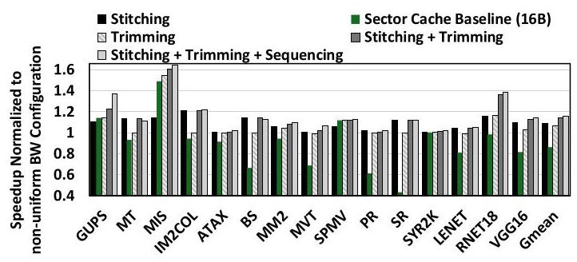
Figure 14: Overall performance improvement with NETCRAFTER normalized to the baseline non-uniform bandwidth multi-GPU configuration.
图14：NETCRAFTER 相对于基线非均匀带宽多 GPU 配置的整体性能提升（归一化）
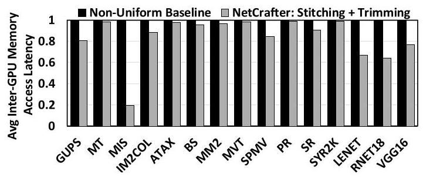
Figure 15: Average Inter-GPU-Cluster memory access latency for non-uniform configuration vs. NETCRAFTER
图 15：非均匀配置下的平均 GPU 集群间内存访问延迟与 NETCRAFTER 对比
From Figure 14, we observe that the sector cache baseline (16B) improves performance for workloads such as MIS, GUPS, and SPMV, as they benefit from the fine-grained cache responses. However, for workloads benefiting from coarser-grain cache responses, sector cache leads to an increase in cache misses (Figure 16), resulting in decreased performance compared to our Trimming approach. Although PR, a graph workload with an inherently sparse access pattern, experiences a performance drop with 16-byte sectors, performance could improve with larger sector sizes. As shown in Figure 7, request distributions often span 16, 32, or 48 bytes within a cache line, suggesting that larger sectors may better suit such workloads. We further investigate this issue with Large GEMM Kernels. For these kernels, Figure 17 shows the impact of Trimming on Cache misses-per-kilo-instructions (MPKI) as a function of trimming granularity / sector size. Although the Trimming approach reduces L1 cache MPKI compared to an all-trimming strategy, we leave the exploration of finding an optimal granularity/sector size as a part of future work.
从图14可以观察到，扇区缓存基线（16B）提升了MIS、GUPS和SPMV等工作负载的性能，因为它们受益于细粒度的缓存响应。然而，对于受益于较粗粒度缓存响应的工作负载，扇区缓存会导致缓存未命中增加（图16），使得性能相较我们的裁剪方法有所下降。尽管PR作为一种图工作负载具有固有的稀疏访问模式，在使用16字节扇区时性能会下降，但采用更大的扇区尺寸可能会改善性能。如图7所示，请求分布经常在一条缓存行内跨越16、32或48字节，这表明更大的扇区可能更适合这类工作负载。我们进一步以大型GEMM内核对此问题展开研究。对于这些内核，图17展示了每千条指令缓存未命中（MPKI）随裁剪粒度/扇区尺寸变化的情况。虽然相比全裁剪策略，裁剪方法降低了L1缓存MPKI，但我们留待未来工作去探索寻找最佳的粒度/扇区尺寸。
5.4 Sensitivity Study with Flit Pooling
Stitching With Flit Pooling. Figure 18 shows the impact of varying Flit Pooling times from 32 to 128 cycles. While increasing the pooling time improves the likelihood of successful flit stitching (Figure 12), it also adds latency for flits unable to find suitable stitching candidates in real-time. Achieving an optimal Flit Pooling time requires balancing reduced network traffic from improved stitching against increased inter-GPU-cluster latency for pooled flits. Figure 18 indicates 32 cycles as a sweet spot for optimal performance with Stitching and Flit Pooling. However, workloads like PR exhibit performance degradation even at 32 cycles. To address this, we employ Selective Flit Pooling (Section 4) and perform a similar sensitivity analysis (discussed next).
带微片池化的拼接。图18展示了将微片池化时间从32周期变化到128周期的影响。延长池化时间虽然能提高成功进行微片拼接的可能性（图12），但也会为那些无法实时找到合适拼接候选的微片增加延迟。要获得最优的微片池化时间，需要平衡拼接改善所减少的网络流量与池化微片所增加的跨GPU集群延迟。图18表明，32周期是拼接与微片池化实现最佳性能的临界点。然而，像PR这类工作负载即使在32周期下也会出现性能下降。为解决该问题，我们采用了选择性微片池化（第4节）并进行了类似的敏感性分析（下文讨论）。
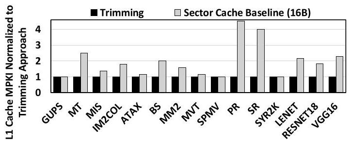
Figure 16: L1 Cache MPKI comparison for trimming in NetCrafter versus a sector cache design (16 byte sector size.
图 16：NetCrafter 中 trimming 与扇区缓存设计（16 字节扇区大小）的 L1 缓存 MPKI 对比。
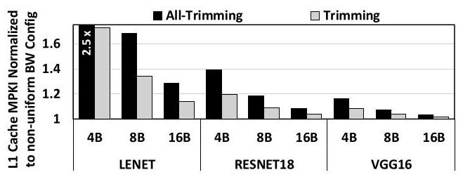
Figure 17: L1 Cache MPKI comparison for trimming in NETCRAFTER versus an all trimming approach, evaluated at trimming granularity of 4, 8, and 16 bytes.
图 17：NETCRAFTER 中裁剪与全裁剪方法的 L1 缓存 MPKI 比较，分别在裁剪粒度为 4、8 和 16 字节时评估。
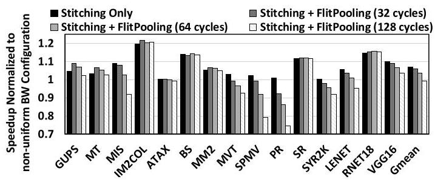
Figure 18: Performance improvements with Stitching alone and Stitching combined with Flit Pooling, evaluated across Flit Pooling times from 32 to 128 cycles, normalized to a baseline non-uniform bandwidth multi-GPU configuration.
图18：单独使用拼接（Stitching）以及拼接结合微片池化（Flit Pooling）时的性能提升，在微片池化时间从32到128个周期的条件下评估，并以基线非均匀带宽多GPU配置进行归一化。
Stitching With Selective Flit Pooling. Selective Flit Pooling is realized by applying Flit Pooling only to non-latency-critical flits (Section 4). Figure 19 shows that with a selective Flit Pooling time of 32 cycles, performance improves through better stitching and reduced latency overhead. This approach prevents performance degradation in workloads like PR and SYR2K, which no longer suffer from the latency issues seen before with standard Flit Pooling at 32 cycles (Figure 18). Figure 20 shows the reduction in network bytes through Stitching and Stitching with Selective Flit Pooling. Stitching offers significant savings, with further reductions from Selective Flit Pooling. However, as the Selective Flit Pooling window increases, savings become constant. Optimal savings occur at a Selective Flit Pooling window of 32 cycles.
拼接与选择性微片池化。选择性微片池化通过仅对非延迟关键微片应用微片池化来实现（第4节）。图19显示，当选择性微片池化时间为32个周期时，性能通过更好的拼接和减少的延迟开销而提升。这种方法避免了如PR和SYR2K等工作负载中的性能下降，这些工作负载不再遭受之前标准微片池化在32个周期时出现的延迟问题（图18）。图20显示了通过拼接以及结合选择性微片池化的拼接带来的网络字节减少。拼接提供了显著的节省，选择性微片池化进一步减少了字节。然而，随着选择性微片池化窗口的增加，节省量趋于恒定。当选择性微片池化窗口为32个周期时，可实现最佳节省效果。
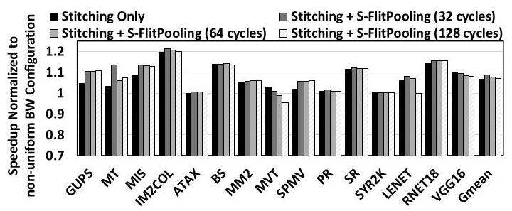
Figure 19: Performance improvements with Stitching alone and Stitching combined with Selective Flit Pooling, evaluated across Flit Pooling times from 32 to 128 cycles, normalized to a baseline non-uniform bandwidth multi-GPU configuration.
图19：单独采用Stitching以及将Stitching与选择性微片池化结合时的性能提升，在32至128个周期的微片池化时间下进行评估，并以基准非均匀带宽多GPU配置进行归一化。
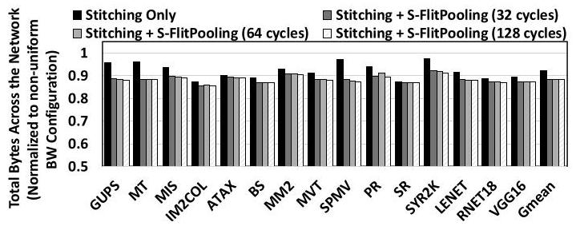
Figure 20: Reduction in network bytes with Stitching alone and Stitching + Selective Flit Pooling, evaluated over 32-128 cycle Flit Pooling intervals, normalized to a baseline nonuniform bandwidth multi-GPU configuration.
图 20：在 32–128 周期的微片合并间隔下评估，仅采用缝合与缝合加选择性微片合并所减少的网络字节量，并以非均匀带宽多 GPU 基线配置为基准进行归一化。
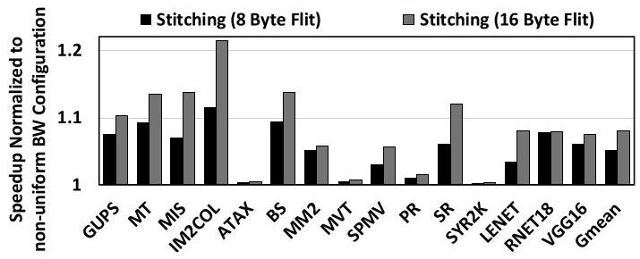
Figure 21: Performance improvement with Stitching and Selective Flit Pooling for 8 and 16 Byte Flit Size.
图 21：采用拼合与选择性微片池化后，在 8 字节和 16 字节微片大小下的性能提升。
5.5 Other Sensitivity Studies
Flit Size. Figure 21 compares the performance of stitching with selective Flit Pooling using a smaller flit size (8B) against our baseline (16B). As shown in Figure 21, the benefits of stitching become less pronounced with a smaller flit size due to the reduced opportunity for stitching additional data. Nevertheless, stitching continues to show performance improvements, underscoring its effectiveness even when operating with significantly reduced flit sizes.
Flit大小。 图21对比了采用选择性Flit池化的拼接技术在使用较小flit大小（8B）与基准（16B）时的性能。如图21所示，随着flit大小的减小，拼接带来的收益变得不那么显著，因为拼接额外数据的机会减少了。尽管如此，拼接仍然表现出性能提升，这凸显了即使在flit大小显著减小的情况下，该技术也依然有效。
Bandwidth Ratios/Numbers. In our baseline, intra-GPU-cluster networks have \({128}\mathrm{{GB}}/\mathrm{s}\) bandwidth, and inter-GPU-cluster networks have \({16}\mathrm{{GB}}/\mathrm{s}\) , resulting in an 8:1 ratio. We analyze bandwidth ratios from 8:1 to 2:1, and values ranging from 128-512 GB/s for intra-GPU-cluster networks and 16-64 GB/s for inter-GPU-cluster networks. Additionally, we assess performance under a homogeneous 32 GB/s configuration for both networks. Figure 22 highlights consistent performance gains with NETCRAFTER across all tested bandwidth configurations, including homogeneous setups.
带宽比率/数值。在我们的基线中，GPU 集群内网络带宽为 \({128}\mathrm{{GB}}/\mathrm{s}\)，GPU 集群间网络带宽为 \({16}\mathrm{{GB}}/\mathrm{s}\)，形成 8:1 的比率。我们分析了从 8:1 到 2:1 的带宽比率，以及 GPU 集群内网络带宽在 128–512 GB/s、GPU 集群间网络带宽在 16–64 GB/s 的取值范围。此外，我们还评估了两种网络均采用同构 32 GB/s 配置下的性能。图 22 表明，NETCRAFTER 在所有测试的带宽配置（包括同构配置）下均能带来稳定的性能提升。
The most significant gains occur in bandwidth-constrained scenarios [60, 63, 77, 102], where large-scale workloads may saturate network bandwidth.
最显著的增益出现在带宽受限的场景中[60, 63, 77, 102]，此时大规模工作负载可能会使网络带宽饱和。
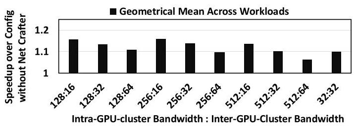
Figure 22: Performance improvements of NetCrafter with varying inter and intra-GPU-cluster bandwidth ratios, network bandwidths, and a homogeneous configuration.
图22：NetCrafter在不同GPU集群间与集群内带宽比、网络带宽以及同构配置下的性能提升。
6 Related Work
Network Optimizations. Finepack [62] proposed to dynamically coalesce and compress small writes/stores into a larger I/O message for reducing link-level protocol overhead. DUALOPT [10] combined fine-grained remote data transfers with coalescing, thereby maximizing inter-GPU bandwidth efficiency. Batching [41, 80] in Network Interface Cards (NICs) reduces DMA overhead and CPU load by accumulating packets. A similar technique is also deployed in NVIDIA Mellanox NICs, referred to as adaptive interrupt moderation [67, 89]. TCP piggybacking [79, 88] reduces overhead by combining control messages like ACKs, but may incur extra overhead (e.g., 12-byte TCP Timestamp Option [37]), thereby reducing data transmission efficiency. Our stitching and pooling techniques operate at a flit level in multi-GPU networks, addressing inefficiencies from mismatched packet and flit sizes.
网络优化。Finepack [62] 提出动态合并并压缩小型写/存储操作，形成更大的 I/O 消息，以降低链路层协议开销。DUALOPT [10] 将细粒度远程数据传输与合并相结合，从而最大化 GPU 间的带宽效率。网络接口卡（NIC）中的批处理 [41, 80] 通过累积数据包来减少 DMA 开销和 CPU 负载。NVIDIA Mellanox NIC 也部署了类似技术，称为自适应中断节流 [67, 89]。TCP 捎带传输 [79, 88] 通过合并 ACK 等控制消息来减少开销，但可能引入额外开销（例如，12 字节的 TCP 时间戳选项 [37]），从而降低数据传输效率。我们的拼接与池化技术在多 GPU 网络中于微片（flit）层面运作，解决因数据包与微片尺寸不匹配造成的效率低下问题。
CTA Scheduling. Arunkumar et al. [5] proposed a distributed CTA scheduling method with a first-touch page placement strategy, allocating contiguous CTAs based on locality. However, this method relies on slow GPU page faults, causing performance degradation with high SM stalling times \(\left\lbrack {{29},{42},{45},{71}}\right\rbrack\) . To mitigate this issue, recent studies have employed compile-time static analysis to infer data access patterns, enabling efficient CTA scheduling and data placement without extensive page migrations. CODA [45] uses compiler index analysis to align thread-blocks with their accessed data, while LASP (Locality-Aware Scheduling and Placement) [42] classifies data structures according to access patterns to enhance locality. LASP demonstrates improved performance compared to previous state-of-the-art methods, such as Batch+First-Touch [5] and CODA [45], establishing itself as a solid baseline for our analysis and recent works [29, 71]. NETCRAFTER principles are equally applicable under all CTA scheduling and page placement approaches. Data Placement. Dashti et al. [19] presented a memory management algorithm that leverages interleaving, page replication, and page migration to address the traffic congestion issue and mitigate the cost of remote wire delays. Agarwal et al. [2] proposed a mechanism for placing pages in a hybrid memory system at runtime that detects and acts on hot and cold pages. Grit [93] optimized page placement by fine-tuning different page placement schemes for pages at runtime. Baruah et al. [9] proposed a page migration system for migrating data between GPUs in multi-GPU systems, while Khairy et al. [42] suggested creating a virtual uniform architecture consisting of discrete GPUs that are internally MCMs. Mitosis [1] proposed replicating pages across all remote nodes to improve performance. Furthermore, significant research has been conducted on developing affinity-targeted thread mapping policies [8, 11, 15, 20, 21, 34, 40, 51, 55, 72, 75, 95].
CTA 调度。Arunkumar 等人[5]提出了一种分布式 CTA 调度方法，并采用首次接触页面放置策略，根据局部性分配连续的 CTA。然而，该方法依赖于缓慢的 GPU 页面错误，导致 SM 停顿时间较长时性能下降 \(\left\lbrack {{29},{42},{45},{71}}\right\rbrack\) 。为缓解这一问题，近期研究采用编译时静态分析来推断数据访问模式，从而在无需大量页面迁移的情况下实现高效的 CTA 调度与数据放置。CODA [45] 利用编译器索引分析将线程块与其访问的数据对齐，而 LASP（局部性感知调度与放置）[42] 则根据访问模式对数据结构进行分类以增强局部性。实验表明，LASP 的性能优于此前领先的方法，如 Batch+First-Touch [5] 和 CODA [45]，成为我们分析以及近期工作[29, 71]的坚实基线。NETCRAFTER 的原理在所有 CTA 调度与页面放置方法下同样适用。数据放置。Dashti 等人[19]提出了一种内存管理算法，该算法利用交错、页面复制和页面迁移来应对流量拥塞问题并降低远程线路延迟的成本。Agarwal 等人[2]提出了一种混合内存系统中运行时页面放置机制，用于检测冷热页面并采取相应措施。Grit [93] 通过在运行时针对不同页面微调不同的页面放置方案来优化页面放置。Baruah 等人[9]提出了一种用于多 GPU 系统间数据迁移的页面迁移系统，而 Khairy 等人[42]则建议构建一个由离散 GPU 组成的虚拟统一架构，其中 GPU 内部为 MCM 结构。Mitosis [1] 提出在所有远端节点复制页面以提升性能。此外，在开发亲和性导向的线程映射策略方面已有大量研究[8, 11, 15, 20, 21, 34, 40, 51, 55, 72, 75, 95]。
Cache Optimizations. Prior works have explored caching remote data to reduce NUMA traffic, including CC-NUMA [82], S-COMA [78], and Reactive NUMA [27], which use different granularities for on-chip caching. CARVE [97] proposed caching remote data in GPU video memory, while Milic et al. [61] adapt caching and interconnect policies based on application phases. Another line of work investigates shared versus private LLC and L1 cache designs, along with sectored cache approaches. [35, 36, 74, 99, 100]
缓存优化。先前的工作探索了缓存远程数据以减少 NUMA 流量，包括 CC-NUMA [82]、S-COMA [78] 和 Reactive NUMA [27]，它们对片上缓存使用不同的粒度。CARVE [97] 提出在 GPU 视频内存中缓存远程数据，而 Milic 等人 [61] 则根据应用阶段调整缓存和互连策略。另一类研究则探讨了共享与私有 LLC 和 L1 缓存设计，以及扇区缓存方法。[35, 36, 74, 99, 100]
Last-Level Cache (LLC) in GPUs can be organized as memory-side caches near memory partitions serving all SMs, or as SM-side caches on each chip serving local SMs with potentially remote data. Memory-side caching maximizes effective capacity by avoiding duplication but suffers from latency and low-bandwidth remote accesses. SM-side caching offers higher bandwidth by placing data closer to compute units, but can duplicate cache lines and add coherence complexity. Our techniques are orthogonal to the choice of LLC organization and are designed to optimize inter-GPU traffic in both memory-side and SM-side cache architectures. Notably, SM-side caching introduces coherence overhead, which creates further opportunities for our optimizations, particularly in SM-side and Shared Aware Caching [98] designs. We leave a deeper exploration of coherence-aware optimizations to future work.
GPU 中的末级缓存（LLC）可以组织为靠近内存分区、为所有 SM 提供服务的存储器侧缓存，也可以组织为位于各芯片上为本地 SM 提供（可能为远程）数据的 SM 侧缓存。存储器侧缓存通过避免重复来最大化有效容量，但会遭受延迟和低带宽远程访问的影响。SM 侧缓存通过将数据设置在更靠近计算单元的位置来提供更高带宽，但可能重复缓存行并增加一致性复杂性。我们的技术与 LLC 的组织方式无关，旨在优化存储器侧和 SM 侧缓存架构中的 GPU 间流量。值得注意的是，SM 侧缓存引入了一致性开销，这为我们的优化创造了更多机会，尤其是在 SM 侧和共享感知缓存 [98] 设计中。我们将对一致性感知优化的更深入探索留待未来工作。
In contrast to previous research that has primarily focused on cache optimizations (e.g., sectoring), efficient data placement, and message/packet coalescing (e.g., stitching and pooling) to address data movement overheads, this work, to the best of our knowledge, is the first to propose a complementary, application-specific approach that manages inter-GPU network traffic by Stitching, Trimming, and Sequencing flits as they traverse lower-bandwidth networks in a multi-GPU system.
与以往主要关注缓存优化（例如，扇区化）、高效数据放置以及消息/数据包合并（例如，拼接和池化）以解决数据移动开销的研究不同，据我们所知，本工作是首个提出一种互补的、面向特定应用的方法，该方法通过在微片穿越多GPU系统中带宽较低的网络时对其进行拼接、修剪和排序来管理GPU间的网络流量。
7 Conclusions
We perform a detailed characterization of multi-GPU network traffic to demonstrate that network bandwidth across groups of multiple GPUs is a critical performance determinant. To address this bottleneck, we carefully characterized the network traffic and showed that flits traveling through the network are not fully utilized. Moreover, a large fraction of flits are never needed (or not needed immediately), while some flits are more latency-sensitive than others. Equipped with these observations, we developed NETCRAFTER that leverages three newly developed crafting techniques (stitching, trimming, and sequencing) to significantly reduce and streamline network traffic. As a result, NETCRAFTER significantly improves multi-GPU performance across a wide range of workloads.
我们对多GPU网络流量进行了详细的表征，以证明跨多个GPU组的网络带宽是一个关键的性能决定因素。为了解决这一瓶颈，我们仔细表征了网络流量，结果表明流经网络的微片并未得到充分利用。此外，大部分微片从未被需要（或不需要立即使用），而有些微片比其他微片对延迟更敏感。基于这些观察，我们开发了NETCRAFTER，它利用了三种新开发的编排技术（拼接、修剪和排序）来显著减少和精简网络流量。因此，NETCRAFTER在广泛的工作负载中显著提升了多GPU性能。
Acknowledgments
We thank the anonymous reviewers for their constructive feedback. This material is based upon work supported by the US National Science Foundation awards (#2316694, #2402804, #2402805) and performed using the computing facilities at the University of Virginia.
我们感谢匿名评审人员提出的建设性反馈。本材料所基于的工作得到了美国国家科学基金会奖项（#2316694, #2402804, #2402805）的资助，并使用弗吉尼亚大学的计算设施完成。
References
[1] Reto Achermann, Ashish Panwar, Abhishek Bhattacharjee, Timothy Roscoe, and Jayneel Gandhi. 2020. Mitosis: Transparently Self-Replicating Page-Tables for Large-Memory Machines. In Proceedings of the Twenty-Fifth International Conference on Architectural Support for Programming Languages and Operating Systems (ASPLOS).
[1] Reto Achermann、Ashish Panwar、Abhishek Bhattacharjee、Timothy Roscoe 和 Jayneel Gandhi. 2020. Mitosis：面向大内存机器的透明自复制页表. 载于第25届国际编程语言与操作系统体系结构支持会议（ASPLOS）论文集.
[2] Neha Agarwal and Thomas F. Wenisch. 2017. Thermostat: Application-transparent Page Management for Two-tiered Main Memory. SIGPLAN Not. 52, 4 (2017), 631-644. doi:10.1145/3093336.3037706
[2] Neha Agarwal 与 Thomas F. Wenisch。2017 年。《Thermostat：面向两层主存的应用透明页面管理》。《SIGPLAN Not.》52 卷，第 4 期（2017 年），631–644 页。doi:10.1145/3093336.3037706
[3] Anurag Agrawal and Changhoon Kim. 2020. Intel tofino2-a 12.9 tbps p4- programmable ethernet switch. In 2020 IEEE Hot Chips 32 Symposium (HCS). IEEE Computer Society, 1-32.
[3] Anurag Agrawal 和 Changhoon Kim. 2020. Intel Tofino2——一款 12.9 Tbps P4 可编程以太网交换机. 收录于 2020 IEEE Hot Chips 32 Symposium (HCS). IEEE Computer Society, 1-32.
[4] AMD. 2015. AMD APP SDK OpenCL Optimization Guide.
[4] AMD. 2015. 《AMD APP SDK OpenCL 优化指南》。
[5] Akhil Arunkumar, Evgeny Bolotin, Benjamin Cho, Ugljesa Milic, Eiman Ebrahimi, Oreste Villa, Aamer Jaleel, Carole-Jean Wu, and David Nellans. 2017. MCM-GPU: Multi-Chip-Module GPUs for Continued Performance Scal-ability. ACM SIGARCH Computer Architecture News 45 (06 2017), 320-332. doi:10.1145/3140659.3080231
[5] Akhil Arunkumar, Evgeny Bolotin, Benjamin Cho, Ugljesa Milic, Eiman Ebrahimi, Oreste Villa, Aamer Jaleel, Carole-Jean Wu, and David Nellans. 2017. MCM-GPU：面向持续性能可扩展性的多芯片模块GPU. ACM SIGARCH计算机体系结构新闻 45 (06 2017), 320-332. doi:10.1145/3140659.3080231
[6] Scott Atchley, Christopher Zimmer, John Lange, David Bernholdt, Veronica Melesse Vergara, Thomas Beck, Michael Brim, Reuben Budiardja, Sunita Chan-drasekaran, Markus Eisenbach, Thomas Evans, Matthew Ezell, Nicholas Fron-tiere, Antigoni Georgiadou, Joe Glenski, Philipp Grete, Steven Hamilton, John Holmen, Axel Huebl, Daniel Jacobson, Wayne Joubert, Kim Mcmahon, Elia Merzari, Stan Moore, Andrew Myers, Stephen Nichols, Sarp Oral, Thomas Pap-atheodore, Danny Perez, David M. Rogers, Evan Schneider, Jean-Luc Vay, and P. K. Yeung. 2023. Frontier: Exploring Exascale. In Proceedings of the International Conference for High Performance Computing, Networking, Storage and Analysis (Denver, CO, USA) (SC '23). Association for Computing Machinery, New York, NY, USA, Article 52, 16 pages. doi:10.1145/3581784.3607089
[6] Scott Atchley, Christopher Zimmer, John Lange, David Bernholdt, Veronica Melesse Vergara, Thomas Beck, Michael Brim, Reuben Budiardja, Sunita Chan-drasekaran, Markus Eisenbach, Thomas Evans, Matthew Ezell, Nicholas Fron-tiere, Antigoni Georgiadou, Joe Glenski, Philipp Grete, Steven Hamilton, John Holmen, Axel Huebl, Daniel Jacobson, Wayne Joubert, Kim Mcmahon, Elia Merzari, Stan Moore, Andrew Myers, Stephen Nichols, Sarp Oral, Thomas Pap-atheodore, Danny Perez, David M. Rogers, Evan Schneider, Jean-Luc Vay, and P. K. Yeung. 2023. Frontier: Exploring Exascale. 载于《高性能计算、网络、存储与分析国际会议论文集》（美国科罗拉多州丹佛）（SC '23）。美国计算机协会，美国纽约州纽约，文章52，共16页。doi:10.1145/3581784.3607089
[7] Rachata Ausavarungnirun, Vance Miller, Joshua Landgraf, Saugata Ghose, Jayneel Gandhi, Adwait Jog, Christopher J. Rossbach, and Onur Mutlu. 2018. MASK: Redesigning the GPU Memory Hierarchy to Support Multi-application Concurrency. In the Proceedings of 23rd International Conference on Architectural Support for Programming Languages and Operating Systems (ASPLOS), Williamsburg, VA. 503-518.
[7] Rachata Ausavarungnirun、Vance Miller、Joshua Landgraf、Saugata Ghose、Jayneel Gandhi、Adwait Jog、Christopher J. Rossbach 以及 Onur Mutlu。2018 年。《MASK：重新设计 GPU 内存层次结构以支持多应用并发》。收录于第 23 届面向编程语言和操作系统的架构支持国际会议（ASPLOS）论文集，美国弗吉尼亚州威廉斯堡，第 503-518 页。
[8] Reza Azimi, David K. Tam, Livio Soares, and Michael Stumm. 2009. Enhancing operating system support for multicore processors by using hardware performance monitoring. SIGOPS Oper. Syst. Rev. 43, 2 (apr 2009), 56-65. doi:10.1145/1531793.1531803
[8] Reza Azimi, David K. Tam, Livio Soares, 和 Michael Stumm. 2009. 通过使用硬件性能监控增强对多核处理器的操作系统支持. SIGOPS Oper. Syst. Rev. 43, 2 (2009年4月), 56-65. doi:10.1145/1531793.1531803
[9] Trinayan Baruah, Yifan Sun, Ali Tolga Din莽er, Saiful A. Mojumder, Jos茅 L. Abel-l谩n, Yash Ukidave, Ajay Joshi, Norman Rubin, John Kim, and David Kaeli. 2020. Griffin: Hardware-Software Support for Efficient Page Migration in Multi-GPU Systems. In 2020 IEEE International Symposium on High Performance Computer Architecture (HPCA). 596-609. doi:10.1109/HPCA47549.2020.00055
[9] Trinayan Baruah, Yifan Sun, Ali Tolga Dinçer, Saiful A. Mojumder, José L. Abel-lán, Yash Ukidave, Ajay Joshi, Norman Rubin, John Kim, 和 David Kaeli. 2020. Griffin: 面向多GPU系统高效页面迁移的硬件-软件支持. 在 2020年IEEE国际高性能计算机架构研讨会 (HPCA). 596-609. doi:10.1109/HPCA47549.2020.00055
[10] Leul Belayneh, Haojie Ye, Kuan-Yu Chen, David Blaauw, Trevor Mudge, Ronald Dreslinski, and Nishil Talati. 2023. Locality-Aware Optimizations for Improving Remote Memory Latency in Multi-GPU Systems. In Proceedings of the International Conference on Parallel Architectures and Compilation Techniques (Chicago, Illinois) (PACT '22). Association for Computing Machinery, New York, NY, USA, 304-316. doi:10.1145/3559009.3569649
[10] Leul Belayneh, Haojie Ye, Kuan-Yu Chen, David Blaauw, Trevor Mudge, Ronald Dreslinski, 和 Nishil Talati. 2023. 面向多GPU系统中降低远端存储器延迟的局部性感知优化. 见《国际并行架构与编译技术会议论文集》(芝加哥，伊利诺伊州) (PACT '22). 计算机协会，美国纽约州纽约市，304–316页. doi:10.1145/3559009.3569649
[11] Fran莽ois Broquedis, Nathalie Furmento, Brice Goglin, Pierre-Andr茅 Wacrenier, and Raymond Namyst. 2010. ForestGOMP: an efficient OpenMP environment for NUMA architectures. International Journal of Parallel Programming 38 (10 2010). doi:10.1007/s10766-010-0136-3
[11] Fran莽ois Broquedis, Nathalie Furmento, Brice Goglin, Pierre-Andr茅 Wacrenier 和 Raymond Namyst. 2010. ForestGOMP: 一种面向NUMA架构的高效OpenMP环境. International Journal of Parallel Programming 38 (10 2010). doi:10.1007/s10766-010-0136-3
[12] Ravi Budruk, Don Anderson, and Tom Shanley. 2004. PCI express system architecture. Addison-Wesley Professional.
[12] Ravi Budruk、Don Anderson 和 Tom Shanley。2004年。《PCI Express系统架构》。Addison-Wesley Professional。
[13] Shuai Che, Bradford M. Beckmann, Steven K. Reinhardt, and Kevin Skadron. 2013. Pannotia: Understanding irregular GPGPU graph applications. 2013 IEEE International Symposium on Workload Characterization (IISWC) (2013), 185-195.
[13] Shuai Che, Bradford M. Beckmann, Steven K. Reinhardt, 和 Kevin Skadron. 2013. Pannotia: 理解不规则GPGPU图应用. 2013年IEEE国际工作负载特性研讨会 (IISWC) (2013), 185-195.
[14] Cen Chen, Kenli Li, Aijia Ouyang, Zhuo Tang, and Keqin Li. 2017. GPU-Accelerated Parallel Hierarchical Extreme Learning Machine on Flink for Big Data. IEEE Transactions on Systems, Man, and Cybernetics: Systems PP (04 2017), 1-14. doi:10.1109/TSMC.2017.2690673
[14] Cen Chen, Kenli Li, Aijia Ouyang, Zhuo Tang, and Keqin Li. 2017. 基于Flink的面向大数据的GPU加速并行分层极限学习机. IEEE Transactions on Systems, Man, and Cybernetics: Systems PP (04 2017), 1-14. doi:10.1109/TSMC.2017.2690673
[15] Hu Chen, Wenguang Chen, Jian Huang, Bob Robert, and H. Kuhn. 2006. MPIPP: an automatic profile-guided parallel process placement toolset for SMP clusters and multiclusters. In Proceedings of the 20th Annual International Conference on Supercomputing (Cairns, Queensland, Australia) (ICS '06). Association for Computing Machinery, New York, NY, USA, 353-360. doi:10.1145/1183401. 1183451
[15] Hu Chen, Wenguang Chen, Jian Huang, Bob Robert, 和 H. Kuhn. 2006. MPIPP: 面向 SMP 集群和多集群的自动性能分析引导的并行进程放置工具集. 见第 20 届国际超级计算年会论文集 (澳大利亚昆士兰凯恩斯) (ICS ’06). 美国计算机协会，纽约，NY，美国，353–360. doi:10.1145/1183401.1183451
[16] Anthony Danalis, Gabriel Marin, Collin McCurdy, Jeremy S. Meredith, Philip C. Roth, Kyle Spafford, Vinod Tipparaju, and Jeffrey S. Vetter. 2010. The Scalable Heterogeneous Computing (SHOC) benchmark suite. In Proceedings of the 3rd Workshop on General-Purpose Computation on Graphics Processing Units (Pittsburgh, Pennsylvania, USA) (GPGPU-3). Association for Computing Machinery, New York, NY, USA, 63-74. doi:10.1145/1735688.1735702
[16] Anthony Danalis, Gabriel Marin, Collin McCurdy, Jeremy S. Meredith, Philip C. Roth, Kyle Spafford, Vinod Tipparaju 和 Jeffrey S. Vetter. 2010. 可扩展异构计算（SHOC）基准测试套件. 见第三届图形处理器通用计算研讨会论文集（美国宾夕法尼亚州匹兹堡）（GPGPU-3）. 美国计算机协会，美国纽约州纽约市，63-74. doi:10.1145/1735688.1735702
[17] Sina Darabi, Mohammad Sadrosadati, Negar Akbarzadeh, Jo毛l Lindegger, Mohammad Hosseini, Mohammad Hosseini, Jisung Park, Juan G贸mez-Luna, Onur Mutlu, and Hamid Sarbazi-Azad. 2023. Morpheus: Extending the Last Level Cache Capacity in GPU Systems Using Idle GPU Core Resources. In Proceedings of the 55th Annual IEEE/ACM International Symposium on Microarchitecture (Chicago, Illinois, USA) (MICRO '22). IEEE Press, 228-244. doi:10.1109/ MICRO56248.2022.00029
[17] Sina Darabi, Mohammad Sadrosadati, Negar Akbarzadeh, Jo毛l Lindegger, Mohammad Hosseini, Mohammad Hosseini, Jisung Park, Juan G贸mez-Luna, Onur Mutlu, and Hamid Sarbazi-Azad. 2023. Morpheus: 利用空闲GPU核心资源扩展GPU系统的末级缓存容量. 见第55届IEEE/ACM微架构国际研讨会论文集（美国伊利诺伊州芝加哥）(MICRO '22). IEEE Press, 228-244. doi:10.1109/MICRO56248.2022.00029
[18] Sajal Dash, Isaac R Lyngaas, Junqi Yin, Xiao Wang, Romain Egele, J. Austin Ellis, Matthias Maiterth, Guojing Cong, Feiyi Wang, and Prasanna Balaprakash. 2024. Optimizing Distributed Training on Frontier for Large Language Models. In ISC High Performance 2024 Research Paper Proceedings (39th International Conference). 1-11. doi:10.23919/ISC.2024.10528939
[18] Sajal Dash, Isaac R Lyngaas, Junqi Yin, Xiao Wang, Romain Egele, J. Austin Ellis, Matthias Maiterth, Guojing Cong, Feiyi Wang, and Prasanna Balaprakash. 2024. 在Frontier上为大型语言模型优化分布式训练. 见《ISC High Performance 2024研究论文文集》（第39届国际会议）. 1-11. doi:10.23919/ISC.2024.10528939
[19] Mohammad Dashti, Alexandra Fedorova, Justin Funston, Fabien Gaud, Renaud Lachaize, Baptiste Lepers, Vivien Quema, and Mark Roth. 2013. Traffic management: a holistic approach to memory placement on NUMA systems. In Proceedings of the Eighteenth International Conference on Architectural Support for Programming Languages and Operating Systems (Houston, Texas, USA) (AS-PLOS '13). Association for Computing Machinery, New York, NY, USA, 381-394. doi:10.1145/2451116.2451157
[19] Mohammad Dashti, Alexandra Fedorova, Justin Funston, Fabien Gaud, Renaud Lachaize, Baptiste Lepers, Vivien Quema, 与 Mark Roth. 2013. 流量管理：NUMA系统内存放置的整体方法. 收录于《第十八届编程语言与操作系统架构支持国际会议论文集》（美国德克萨斯州休斯顿）(ASPLOS '13). 美国计算机协会，美国纽约州纽约市，381–394. doi:10.1145/2451116.2451157
[20] Matthias Diener, Felipe Madruga, Eduardo Rodrigues, Marco Alves, Jorg Schneider, Philippe Navaux, and Hans-Ulrich Heiss. 2010. Evaluating Thread Placement Based on Memory Access Patterns for Multi-core Processors. In 2010 IEEE 12th International Conference on High Performance Computing and Communications (HPCC). 491-496. doi:10.1109/HPCC.2010.114
[20] Matthias Diener, Felipe Madruga, Eduardo Rodrigues, Marco Alves, Jorg Schneider, Philippe Navaux, and Hans-Ulrich Heiss. 2010. 基于内存访问模式的多核处理器线程放置评估. 载于2010年IEEE第12届高性能计算与通信国际会议(HPCC). 491-496. doi:10.1109/HPCC.2010.114
[21] Wei Ding, Yuanrui Zhang, Mahmut Kandemir, Jithendra Srinivas, and Praveen Yedlapalli. 2013. Locality-aware mapping and scheduling for multicores. In Proceedings of the 2013 IEEE/ACM International Symposium on Code Generation and Optimization (CGO). 1-12. doi:10.1109/CGO.2013.6495009
[21] Wei Ding，Yuanrui Zhang，Mahmut Kandemir，Jithendra Srinivas 和 Praveen Yedlapalli. 2013. 面向多核的局部性感知映射与调度. 见：2013年IEEE/ACM国际代码生成与优化研讨会（CGO）论文集，1-12. doi:10.1109/CGO.2013.6495009
[22] Shi Dong, Xiang Gong, Yifan Sun, Trinayan Baruah, and David Kaeli. 2018. Characterizing the Microarchitectural Implications of a Convolutional Neural Network (CNN) Execution on GPUs. In Proceedings of the 2018 ACM/SPEC International Conference on Performance Engineering (Berlin, Germany) (ICPE '18). Association for Computing Machinery, New York, NY, USA, 96-106. doi:10. 1145/3184407.3184423
[22] Shi Dong, Xiang Gong, Yifan Sun, Trinayan Baruah, 和 David Kaeli. 2018. 表征卷积神经网络（CNN）在GPU上执行的微架构影响. 载于《2018年ACM/SPEC国际性能工程会议论文集》（德国柏林）（ICPE '18）. 美国计算机协会，纽约，美国，96–106页. doi:10.1145/3184407.3184423
[23] Shi Dong and David R. Kaeli. 2017. DNNMark: A Deep Neural Network Benchmark Suite for GPUs. Proceedings of the General Purpose GPUs (2017).
[23] Shi Dong 和 David R. Kaeli. 2017. DNNMark：面向 GPU 的深度神经网络基准测试套件. 通用 GPU 会议论文集 (2017).
[24] Sankha Baran Dutta, Hoda Naghibijouybari, Arjun Gupta, Nael Abu-Ghazaleh, Andres Marquez, and Kevin Barker. 2023. Spy in the GPU-box: Covert and Side Channel Attacks on Multi-GPU Systems. In Proceedings of the 50th Annual International Symposium on Computer Architecture (Orlando, FL, USA) (ISCA '23). Association for Computing Machinery, New York, NY, USA, Article 45, 13 pages. doi:10.1145/3579371.3589080
[24] Sankha Baran Dutta, Hoda Naghibijouybari, Arjun Gupta, Nael Abu-Ghazaleh, Andres Marquez, and Kevin Barker. 2023. Spy in the GPU-box: Covert and Side Channel Attacks on Multi-GPU Systems. 见第50届计算机体系结构国际研讨会论文集（美国佛罗里达州奥兰多）（ISCA '23）。美国计算机协会，美国纽约州纽约市，文章编号45，共13页。doi:10.1145/3579371.3589080
[25] Argonne Leadership Computing Facility. 2022. Aurora. https://www.alcf.anl.gov/support-center/aurora-sunspot
[25] 阿贡领导力计算设施。2022年。Aurora。https://www.alcf.anl.gov/support-center/aurora-sunspot
[26] Oak Ridge Leadership Computing Facility. 2022. Frontier User Guide - System Overview. https://docs.olcf.ornl.gov/systems/frontier_user_guide.html#id2
[26] 橡树岭领导计算设施。2022. Frontier 用户指南 - 系统概述。https://docs.olcf.ornl.gov/systems/frontier_user_guide.html#id2
[27] B. Falsafi and D.A. Wood. 1997. Reactive NUMA: A Design For Unifying S-COMA And CC-NUMA. In Conference Proceedings. The 24th Annual International Symposium on Computer Architecture. 229-240. doi:10.1145/264107.264205
[27] B. Falsafi 和 D.A. Wood. 1997. Reactive NUMA: 统一 S-COMA 与 CC-NUMA 的设计. 见会议论文集，第24届计算机体系结构国际研讨会. 229-240. doi:10.1145/264107.264205
[28] Amel Fatima, Sihang Liu, Korakit Seemakhupt, Rachata Ausavarungnirun, and Samira Khan. 2023. vPIM: Efficient Virtual Address Translation for Scalable Processing-in-Memory Architectures. In 2023 60th ACM/IEEE Design Automation Conference (DAC). 1-6. doi:10.1109/DAC56929.2023.10247745
[28] Amel Fatima、Sihang Liu、Korakit Seemakhupt、Rachata Ausavarungnirun 和 Samira Khan. 2023. vPIM：面向可扩展存内处理架构的高效虚拟地址转换. 见于 2023 年第 60 届 ACM/IEEE 设计自动化会议（DAC）. 1-6. doi:10.1109/DAC56929.2023.10247745
[29] Yuan Feng, Seonjin Na, Hyesoon Kim, and Hyeran Jeon. 2024. Barre Chord: Efficient Virtual Memory Translation for Multi-Chip-Module GPUs. In ACM/IEEE 51st Annual International Symposium on Computer Architecture (ISCA).
[29] Yuan Feng、Seonjin Na、Hyesoon Kim 和 Hyeran Jeon. 2024. Barre Chord：面向多芯片模块GPU的高效虚拟内存转换. 见 ACM/IEEE 第51届计算机体系结构年度国际研讨会 (ISCA).
[30] Nitin A. Gawande, Joshua B. Landwehr, Jeff A. Daily, Nathan R. Tallent, Abhinav Vishnu, and Darren J. Kerbyson. 2017. Scaling Deep Learning Workloads: NVIDIA DGX-1/Pascal and Intel Knights Landing. In 2017 IEEE International Parallel and Distributed Processing Symposium Workshops (IPDPSW). 399-408. doi:10.1109/IPDPSW.2017.36
[30] Nitin A. Gawande, Joshua B. Landwehr, Jeff A. Daily, Nathan R. Tallent, Abhinav Vishnu 和 Darren J. Kerbyson. 2017. 扩展深度学习工作负载：NVIDIA DGX-1/Pascal 与 Intel Knights Landing. 收录于 2017 IEEE 国际并行与分布式处理研讨会研讨会 (IPDPSW). 399-408. doi:10.1109/IPDPSW.2017.36
[31] Priya Goyal, Piotr Doll谩r, Ross B. Girshick, Pieter Noordhuis, Lukasz Wesolowski, Aapo Kyrola, Andrew Tulloch, Yangqing Jia, and Kaiming He. 2017. Accurate, Large Minibatch SGD: Training ImageNet in 1 Hour. ArXiv abs/1706.02677 (2017).
[31] Priya Goyal, Piotr Doll谩r, Ross B. Girshick, Pieter Noordhuis, Lukasz Wesolowski, Aapo Kyrola, Andrew Tulloch, Yangqing Jia, and Kaiming He. 2017. 《精确的大规模小批量SGD：1小时内训练ImageNet》. ArXiv abs/1706.02677 (2017).
[32] Scott Grauer-Gray, Lifan Xu, Robert Searles, Sudhee Ayalasomayajula, and John Cavazos. 2012. Auto-tuning a high-level language targeted to GPU codes. In 2012 Innovative Parallel Computing (InPar). 1-10. doi:10.1109/InPar.2012.6339595
[32] Scott Grauer-Gray, Lifan Xu, Robert Searles, Sudhee Ayalasomayajula, and John Cavazos. 2012. 面向GPU代码的高级语言自动调优. 见 2012年创新并行计算会议 (InPar). 1-10. doi:10.1109/InPar.2012.6339595
[33] Mert Hidayetoglu, Simon Garcia De Gonzalo, Elliott Slaughter, Yu Li, Christopher Zimmer, Tekin Bicer, Bin Ren, William Gropp, Wen-Mei Hwu, and Alex Aiken. 2024. CommBench: Micro-Benchmarking Hierarchical Networks with Multi-GPU, Multi-NIC Nodes. In Proceedings of the 38th ACM International Conference on Supercomputing (ICS '24). Association for Computing Machinery, New York, NY, USA, 426-436. doi:10.1145/3650200.3656591
[33] Mert Hidayetoglu, Simon Garcia De Gonzalo, Elliott Slaughter, Yu Li, Christopher Zimmer, Tekin Bicer, Bin Ren, William Gropp, Wen-Mei Hwu, 和 Alex Aiken. 2024. CommBench: 对具有多GPU、多网卡节点的层次化网络进行微基准测试. 见第38届ACM国际超级计算会议论文集 (ICS '24). 美国计算机协会, 纽约, 纽约州, 美国, 426-436. doi:10.1145/3650200.3656591
[34] Joshua Hursey, Jeffrey M. Squyres, and Terry Dontje. 2011. Locality-Aware Parallel Process Mapping for Multi-core HPC Systems. In 2011 IEEE International Conference on Cluster Computing. 527-531. doi:10.1109/CLUSTER.2011.59
本文针对非均匀带宽多GPU系统中的性能瓶颈，系统中同一集群内的GPU通过高带宽链路连接，而集群之间则由低带宽网络互连。作者对网络流量进行了特征分析，发现许多微片（flit）含有空填充字节，大量取回的缓存行字节从未被波阵面实际使用，而页表遍历（PTW）微片虽对延迟高度敏感，却仅占总流量的一小部分。
基于这些观察，NetCrafter 引入了三项技术： - 拼合（Stitching）：将来自兼容数据包的部分填充微片进行合并，以减少传输微片总数，并辅以流量类别候选选择、微片池化（延迟弹出以寻找拼合伙伴）以及避免对延迟敏感的微片执行池化的选择性池化策略。 - 修剪（Trimming）：在集群间请求中，当波阵面仅需一个64字节缓存行中 ≤16 字节时，仅发送所需字节，利用分扇区L1缓存避免在无用数据上浪费带宽。 - 定序（Sequencing）：将PTW相关微片在低带宽网络上的优先级置于数据微片之上，因为PTW微片位于数据访问的关键路径上且数据量小，可防止其被阻塞。
在一个类似 Frontier 的非均匀多GPU系统上经过15种工作负载评估，NetCrafter 通过大幅减少并更好地管理带宽受限的集群间链路上的流量，相较于基线实现了最高达64%的加速（平均16%），从而提升了GPU系统的可扩展性。
[35] Mohamed Assem Ibrahim, Onur Kayiran, Yasuko Eckert, Gabriel H. Loh, and Adwait Jog. 2020. Analyzing and Leveraging Shared L1 Caches in GPUs. In Proceedings of the ACM International Conference on Parallel Architectures and Compilation Techniques (Virtual Event, GA, USA) (PACT '20). Association for Computing Machinery, New York, NY, USA, 161-173. doi:10.1145/3410463. 3414623
[35] Mohamed Assem Ibrahim, Onur Kayiran, Yasuko Eckert, Gabriel H. Loh 和 Adwait Jog。2020。在GPU中分析与利用共享L1缓存。发表于《ACM国际并行架构与编译技术会议论文集》（线上活动，美国佐治亚州）（PACT '20）。美国纽约州纽约市：计算机协会，第161-173页。doi:10.1145/3410463.3414623
[36] Mohamed Assem Ibrahim, Onur Kayiran, Yasuko Eckert, Gabriel H. Loh, and Adwait Jog. 2021. Analyzing and Leveraging Decoupled L1 Caches in GPUs. In 2021 IEEE International Symposium on High-Performance Computer Architecture (HPCA). 467-478. doi:10.1109/HPCA51647.2021.00047
[36] 穆罕默德·阿塞姆·易卜拉欣，奥努尔·卡伊兰，安子·埃克特，加布里埃尔·H·洛，阿德维特·乔格. 2021. 分析与利用 GPU 中的解耦 L1 缓存. 见 2021 年 IEEE 国际高性能计算机体系结构研讨会 (HPCA). 467-478. doi:10.1109/HPCA51647.2021.00047
[37] Van Jacobson, Robert Braden, and David Borman. 1992. TCP Extensions for High Performance. RFC 1323, https://www.rfc-editor.org/rfc/rfc1323.txt.doi:10.17487/RFC1323 Accessed: 2024-11-20.
[37] Van Jacobson, Robert Braden, and David Borman. 1992. 用于高性能的TCP扩展. RFC 1323, https://www.rfc-editor.org/rfc/rfc1323.txt.doi:10.17487/RFC1323 访问日期：2024-11-20.
[38] Colin L. Jermain, Graham E. Rowlands, Robert A. Buhrman, and Daniel C. Ralph. 2015. GPU-accelerated micromagnetic simulations using cloud computing. Journal of Magnetism and Magnetic Materials 401 (2015), 320-322.
[38] Colin L. Jermain, Graham E. Rowlands, Robert A. Buhrman, and Daniel C. Ralph. 2015. 利用云计算的GPU加速微磁模拟. Journal of Magnetism and Magnetic Materials 401 (2015), 320-322.
[39] Hai Jiang, Yi Chen, Zhi Qiao, Tien-Hsiung Weng, and Kuan-Ching Li. 2015. Scaling up MapReduce-based Big Data Processing on Multi-GPU systems. Cluster Computing 18, 1 (mar 2015), 369-383. doi:10.1007/s10586-014-0400-1
[39] Hai Jiang, Yi Chen, Zhi Qiao, Tien-Hsiung Weng, and Kuan-Ching Li. 2015. 在多GPU系统上扩展基于MapReduce的大数据处理. Cluster Computing 18, 1 (mar 2015), 369-383. doi:10.1007/s10586-014-0400-1
[40] Adwait Jog, Onur Kayiran, Nachiappan Chidambaram Nachiappan, Asit K. Mishra, Mahmut T. Kandemir, Onur Mutlu, Ravishankar Iyer, and Chita R. Das. 2013. OWL: cooperative thread array aware scheduling techniques for improving GPGPU performance (ASPLOS '13). Association for Computing Machinery, New York, NY, USA, 395-406. doi:10.1145/2451116.2451158
[40] Adwait Jog、Onur Kayiran、Nachiappan Chidambaram Nachiappan、Asit K. Mishra、Mahmut T. Kandemir、Onur Mutlu、Ravishankar Iyer 和 Chita R. Das。2013 年。OWL：面向协作线程阵列感知的调度技术以提升 GPGPU 性能（ASPLOS ’13）。美国计算机协会，美国纽约，页码 395–406。doi:10.1145/2451116.2451158
[41] Anuj Kalia, Michael Kaminsky, and David G Andersen. 2016. Design guidelines for high performance {RDMA} systems. In 2016 USENIX Annual Technical Conference (USENIX ATC 16). 437-450.
[41] Anuj Kalia, Michael Kaminsky 和 David G Andersen. 2016. 高性能 {RDMA} 系统设计指南. 见于 2016 年 USENIX 年度技术会议 (USENIX ATC 16). 437-450.
[42] Mahmoud Khairy, Vadim Nikiforov, David Nellans, and Timothy G. Rogers. 2020. Locality-Centric Data and Threadblock Management for Massive GPUs. In 2020 53rd Annual IEEE/ACM International Symposium on Microarchitecture (MICRO). 1022-1036. doi:10.1109/MICRO50266.2020.00086
[42] Mahmoud Khairy、Vadim Nikiforov、David Nellans 和 Timothy G. Rogers。2020。面向大规模 GPU 的局部性中心数据与线程块管理。载于 2020 年第 53 届 IEEE/ACM 国际微架构研讨会 (MICRO)。1022–1036。doi:10.1109/MICRO50266.2020.00086
[43] Mahmoud Khairy, Zhesheng Shen, Tor M. Aamodt, and Timothy G. Rogers. 2020. Accel-Sim: An Extensible Simulation Framework for Validated GPU Modeling. In 2020 ACM/IEEE 47th Annual International Symposium on Computer Architecture (ISCA). 473-486. doi:10.1109/ISCA45697.2020.00047
[43] Mahmoud Khairy, Zhesheng Shen, Tor M. Aamodt, and Timothy G. Rogers. 2020. Accel-Sim: An Extensible Simulation Framework for Validated GPU Modeling. 在2020年ACM/IEEE第47届计算机体系结构国际研讨会（ISCA）上. 473-486. doi:10.1109/ISCA45697.2020.00047
[44] Hoda Aghaei Khouzani, Pouya Fotouhi, Chengmo Yang, and Guang R. Gao. 2017. Leveraging access port positions to accelerate page table walk in DWM-based main memory. In Design, Automation and Test in Europe Conference and Exhibition (DATE), 2017. 1450-1455. doi:10.23919/DATE.2017.7927220
[44] Hoda Aghaei Khouzani, Pouya Fotouhi, Chengmo Yang 和 Guang R. Gao. 2017. 利用访问端口位置加速基于DWM的主存储器中的页表遍历. 见 欧洲设计自动化与测试会议 (DATE), 2017. 1450-1455. doi:10.23919/DATE.2017.7927220
[45] Hyojong Kim, Ramyad Hadidi, Lifeng Nai, Hyesoon Kim, Nuwan Jayasena, Yasuko Eckert, Onur Kayiran, and Gabriel Loh. 2018. CODA: Enabling Co-location of Computation and Data for Multiple GPU Systems. ACM Trans. Archit. Code Optim. 15, 3, Article 32 (Sept. 2018), 23 pages. doi:10.1145/3232521
[45] Hyojong Kim, Ramyad Hadidi, Lifeng Nai, Hyesoon Kim, Nuwan Jayasena, Yasuko Eckert, Onur Kayiran 和 Gabriel Loh. 2018. CODA: 为多GPU系统实现计算与数据的协同放置. ACM Trans. Archit. Code Optim. 15, 3, 文章 32 (2018年9月), 23页. doi:10.1145/3232521
[46] Yonghae Kim, Jaekyu Lee, and Hyesoon Kim. 2020. Hardware-based Always-On Heap Memory Safety. In 2020 53rd Annual IEEE/ACM International Symposium on Microarchitecture (MICRO). 1153-1166. doi:10.1109/MICRO50266.2020.00095
Yonghae Kim, Jaekyu Lee 和 Hyesoon Kim. 2020. 基于硬件的始终开启的堆内存安全性. 载于 2020年第53届IEEE/ACM国际微架构研讨会 (MICRO). 1153-1166. doi:10.1109/MICRO50266.2020.00095
[47] Alex Krizhevsky, Ilya Sutskever, and Geoffrey E. Hinton. 2017. ImageNet classification with deep convolutional neural networks. Commun. ACM 60, 6 (may 2017), 84-90. doi:10.1145/3065386
[47] Alex Krizhevsky, Ilya Sutskever, 和 Geoffrey E. Hinton. 2017. 使用深度卷积神经网络的ImageNet分类. 《美国计算机学会通讯》60, 6 (2017年5月), 84-90. doi:10.1145/3065386
[48] Ya Le and Xuan Yang. 2015. Tiny imagenet visual recognition challenge. CS 231N 7, 7 (2015), 3.
[48] Ya Le 和 Xuan Yang. 2015. Tiny imagenet 视觉识别挑战. CS 231N 7, 7 (2015), 3.
[49] Yann LeCun and Corinna Cortes. 2005. The mnist database of handwritten digits.
[49] 杨立昆和科琳娜·科尔特斯。2005。手写数字的 MNIST 数据库。
[50] Jaewon Lee, Yonghae Kim, Jiashen Cao, Euna Kim, Jaekyu Lee, and Hyesoon Kim. 2022. Securing gpu via region-based bounds checking. In Proceedings of the 49th Annual International Symposium on Computer Architecture. 27-41.
[50] Jaewon Lee, Yonghae Kim, Jiashen Cao, Euna Kim, Jaekyu Lee 和 Hyesoon Kim. 2022. 通过基于区域的边界检查保护 GPU 安全. 见《第49届国际计算机体系结构研讨会论文集》。27-41页。
[51] Minseok Lee, Seokwoo Song, Joosik Moon, John Kim, Woong Seo, Yeongon Cho, and Soojung Ryu. 2014. Improving GPGPU resource utilization through alternative thread block scheduling. In 2014 IEEE 20th International Symposium on High Performance Computer Architecture (HPCA). 260-271. doi:10.1109/HPCA. 2014.6835937
[51] Minseok Lee、Seokwoo Song、Joosik Moon、John Kim、Woong Seo、Yeongon Cho 和 Soojung Ryu。2014 年。通过替代线程块调度提高 GPGPU 资源利用率。收录于《2014 年 IEEE 第 20 届高性能计算机体系结构国际研讨会 (HPCA)》。第 260–271 页。doi:10.1109/HPCA. 2014.6835937
[52] Michael LeMay, Joydeep Rakshit, Sergej Deutsch, David M. Durham, Santosh Ghosh, Anant Nori, Jayesh Gaur, Andrew Weiler, Salmin Sultana, Karanvir Gre-wal, and Sreenivas Subramoney. 2021. Cryptographic Capability Computing. In MICRO-54: 54th Annual IEEE/ACM International Symposium on Microarchitecture (Virtual Event, Greece) (MICRO '21). Association for Computing Machinery, New York, NY, USA, 253-267. doi:10.1145/3466752.3480076
[52] Michael LeMay、Joydeep Rakshit、Sergej Deutsch、David M. Durham、Santosh Ghosh、Anant Nori、Jayesh Gaur、Andrew Weiler、Salmin Sultana、Karanvir Gre-wal 以及 Sreenivas Subramoney. 2021. 密码能力计算. 载于 MICRO-54：第54届IEEE/ACM国际微架构研讨会（希腊虚拟会议）(MICRO '21). 美国计算机协会，美国纽约州纽约市，253-267页. doi:10.1145/3466752.3480076
[53] Ang Li, Shuaiwen Leon Song, Jieyang Chen, Jiajia Li, Xu Liu, Nathan R. Tallent, and Kevin J. Barker. 2020. Evaluating Modern GPU Interconnect: PCIe, NVLink, NV-SLI, NVSwitch and GPUDirect. IEEE Transactions on Parallel and Distributed Systems 31, 1 (2020), 94-110. doi:10.1109/TPDS.2019.2928289
[53] Ang Li, Shuaiwen Leon Song, Jieyang Chen, Jiajia Li, Xu Liu, Nathan R. Tallent, 和 Kevin J. Barker. 2020. 评估现代 GPU 互连：PCIe、NVLink、NV-SLI、NVSwitch 与 GPUDirect. 《IEEE 并行与分布式系统汇刊》 31, 1 (2020), 94-110. doi:10.1109/TPDS.2019.2928289
[54] Ang Li, Shuaiwen Leon Song, Jieyang Chen, Xu Liu, Nathan Tallent, and Kevin Barker. 2018. Tartan: Evaluating Modern GPU Interconnect via a Multi-GPU Benchmark Suite. In 2018 IEEE International Symposium on Workload Characterization (IISWC). 191-202. doi:10.1109/IISWC.2018.8573483
[54] Ang Li, Shuaiwen Leon Song, Jieyang Chen, Xu Liu, Nathan Tallent 和 Kevin Barker. 2018. 《Tartan：通过多GPU基准测试套件评估现代GPU互连》。载于《2018年IEEE国际负载特征分析研讨会（IISWC）》。191-202页。doi:10.1109/IISWC.2018.8573483
[55] Ang Li, Shuaiwen Leon Song, Weifeng Liu, Xu Liu, Akash Kumar, and Henk Corporaal. 2017. Locality-Aware CTA Clustering for Modern GPUs. In Proceedings of the Twenty-Second International Conference on Architectural Support for Programming Languages and Operating Systems (Xi'an, China) (ASP-LOS '17). Association for Computing Machinery, New York, NY, USA, 297-311. doi:10.1145/3037697.3037709
[55] Ang Li, Shuaiwen Leon Song, Weifeng Liu, Xu Liu, Akash Kumar, 和 Henk Corporaal. 2017. 面向现代GPU的局部性感知CTA聚类. 载于《第二十二届编程语言与操作系统体系结构支持国际会议论文集》（中国西安）（ASP-LOS ’17）. 计算机协会，美国纽约州纽约市，297-311. doi:10.1145/3037697.3037709
[56] Bingyao Li, Yanan Guo, Yueqi Wang, Aamer Jaleel, Jun Yang, and Xulong Tang. 2023. IDYLL: Enhancing Page Translation in Multi-GPUs via Light Weight PTE Invalidations. In Proceedings of the 56th Annual IEEE/ACM International Symposium on Microarchitecture (MICRO '23). Association for Computing Machinery, New York, NY, USA, 1163-1177. doi:10.1145/3613424.3614269
[56] Bingyao Li, Yanan Guo, Yueqi Wang, Aamer Jaleel, Jun Yang, and Xulong Tang. 2023. IDYLL: 通过轻量级PTE失效增强多GPU系统中的页表转换. 见第56届IEEE/ACM微架构国际研讨会论文集 (MICRO '23). 美国计算机协会，纽约，NY，美国，1163-1177. doi:10.1145/3613424.3614269
[57] Bingyao Li, Yueqi Wang, Tianyu Wang, Lieven Eeckhout, Jun Yang, Aamer Jaleel, and Xulong Tang. 2024. Improving Multi-Instance GPU Efficiency via Sub-Entry Sharing TLB Design. arXiv preprint arXiv:2404.18361 (2024).
[57] Bingyao Li, Yueqi Wang, Tianyu Wang, Lieven Eeckhout, Jun Yang, Aamer Jaleel, 和 Xulong Tang. 2024. 通过子条目共享TLB设计提升多实例GPU效率. arXiv预印本 arXiv:2404.18361 (2024).
[58] Bingyao Li, Jieming Yin, Anup Holey, Youtao Zhang, Jun Yang, and Xulong Tang. 2023. Trans-FW: Short Circuiting Page Table Walk in Multi-GPU Systems via Remote Forwarding. In 2023 IEEE International Symposium on High-Performance Computer Architecture (HPCA). 456-470. doi:10.1109/HPCA56546.2023.10071054
[58] Bingyao Li, Jieming Yin, Anup Holey, Youtao Zhang, Jun Yang 和 Xulong Tang. 2023. Trans-FW：通过远程转发在多GPU系统中短路页表遍历. 见 2023年IEEE国际高性能计算机架构研讨会 (HPCA). 456–470. doi:10.1109/HPCA56546.2023.10071054
[59] Bingyao Li, Jieming Yin, Youtao Zhang, and Xulong Tang. 2021. Improving Address Translation in Multi-GPUs via Sharing and Spilling Aware TLB Design. In 54th Annual IEEE/ACM International Symposium on Microarchitecture (MICRO).
[59] Bingyao Li, Jieming Yin, Youtao Zhang 和 Xulong Tang. 2021. 通过共享与溢出感知的TLB设计改善多GPU中的地址转换. 收录于第54届IEEE/ACM国际微架构研讨会（MICRO）年刊.
[60] Youjie Li, Iou-Jen Liu, Yifan Yuan, Deming Chen, Alexander Schwing, and Jian Huang. 2019. Accelerating Distributed Reinforcement learning with In-Switch Computing. In 2019 ACM/IEEE 46th Annual International Symposium on Computer Architecture (ISCA). 279-291.
[60] Youjie Li, Iou-Jen Liu, Yifan Yuan, Deming Chen, Alexander Schwing, and Jian Huang. 2019. 利用交换机内计算加速分布式强化学习. 收录于 2019 ACM/IEEE 第46届国际计算机体系结构年会 (ISCA). 279-291.
[61] Ugljesa Milic, Oreste Villa, Evgeny Bolotin, Akhil Arunkumar, Eiman Ebrahimi, Aamer Jaleel, Alex Ramirez, and David Nellans. 2017. Beyond the Socket: NUMA-Aware GPUs. In 2017 50th Annual IEEE/ACM International Symposium on Microarchitecture (MICRO). 123-135.
[61] Ugljesa Milic, Oreste Villa, Evgeny Bolotin, Akhil Arunkumar, Eiman Ebrahimi, Aamer Jaleel, Alex Ramirez, 和 David Nellans. 2017. 超越插槽：NUMA感知的GPU. 载于 2017年第50届IEEE/ACM国际微架构研讨会 (MICRO). 123-135.
[62] Harini Muthukrishnan, Daniel Lustig, Oreste Villa, Thomas Wenisch, and David Nellans. 2023. FinePack: Transparently Improving the Efficiency of Fine-Grained Transfers in Multi-GPU Systems. In 2023 IEEE International Symposium on High-Performance Computer Architecture (HPCA). 516-529. doi:10.1109/HPCA56546. 2023.10070949
[62] Harini Muthukrishnan, Daniel Lustig, Oreste Villa, Thomas Wenisch 和 David Nellans. 2023. FinePack: 透明提升多GPU系统中细粒度传输的效率. 收录于 2023 IEEE 国际高性能计算机体系结构研讨会 (HPCA). 516-529. doi:10.1109/HPCA56546. 2023.10070949
[63] Rolf Neugebauer, Gianni Antichi, Jos茅 Fernando Zazo, Yury Audzevich, Sergio L贸pez-Buedo, and Andrew W. Moore. 2018. Understanding PCIe performance for end host networking. In Proceedings of the 2018 Conference of the ACM Special Interest Group on Data Communication (Budapest, Hungary) (SIGCOMM '18). Association for Computing Machinery, New York, NY, USA, 327-341. doi:10. 1145/3230543.3230560
[63] Rolf Neugebauer, Gianni Antichi, Jos茅 Fernando Zazo, Yury Audzevich, Sergio L贸pez-Buedo, and Andrew W. Moore. 2018. Understanding PCIe performance for end host networking. In Proceedings of the 2018 Conference of the ACM Special Interest Group on Data Communication (Budapest, Hungary) (SIGCOMM '18). Association for Computing Machinery, New York, NY, USA, 327–341. doi:10.1145/3230543.3230560
[64] NVIDIA. 2016. NVIDIA Tesla P100: The Most Advanced Datacenter Accelerator Ever Built. https://images.nvidia.com/content/pdf/tesla/whitepaper/ pascalarchitecture-whitepaper.pdf Accessed: 2017-09-19.
[64] NVIDIA. 2016. NVIDIA Tesla P100：史上最先进的数据中心加速器。 https://images.nvidia.com/content/pdf/tesla/whitepaper/pascalarchitecture-whitepaper.pdf 访问日期：2017年9月19日。
[65] NVIDIA. 2017. NVIDIA DGX-1 System Architecture White paper.
[65] NVIDIA. 2017. NVIDIA DGX-1 系统架构白皮书。
[66] NVIDIA. 2018. NVIDIA DGX-2. https://www.nvidia.com/en-us/data-center/dgx- 2/
[66] NVIDIA. 2018. NVIDIA DGX-2. https://www.nvidia.com/en-us/data-center/dgx-2/
[67] NVIDIA Corporation. 2024. Performance Tuning for Mellanox Adapters. https://enterprise-support.nvidia.com/s/article/performance-tuning-for-mellanox-adapters.Accessed: 2024-11-20.
[67] NVIDIA公司. 2024. Mellanox适配器性能调优. https://enterprise-support.nvidia.com/s/article/performance-tuning-for-mellanox-adapters. 访问日期：2024-11-20.
[68] Chang Hyun Park, Ilias Vougioukas, Andreas Sandberg, and David Black-Schaffer. 2022. Every walk's a hit: making page walks single-access cache hits. In Proceedings of the 27th ACM International Conference on Architectural Support for Programming Languages and Operating Systems (Lausanne, Switzerland) (ASPLOS '22). Association for Computing Machinery, New York, NY, USA, 128-141. doi:10.1145/3503222.3507718
[68] Chang Hyun Park, Ilias Vougioukas, Andreas Sandberg 和 David Black-Schaffer. 2022. 每次遍历皆命中：让页表遍历成为单次访问的缓存命中. 载于《第27届ACM国际编程语言与操作系统体系结构支持会议论文集》（瑞士洛桑）（ASPLOS '22）。美国纽约州纽约市：计算机协会，第128–141页。doi:10.1145/3503222.3507718
[69] Junhyeok Park, Osang Kwon, Yongho Lee, Seongwook Kim, Gwangeun Byeon, Jihun Yoon, Prashant J. Nair, and Seokin Hong. 2024. A Case for Speculative Address Translation with Rapid Validation for GPUs. In 2024 57th IEEE/ACM International Symposium on Microarchitecture (MICRO). 278-292. doi:10.1109/ MICRO61859.2024.00029
[69] Junhyeok Park、Osang Kwon、Yongho Lee、Seongwook Kim、Gwangeun Byeon、Jihun Yoon、Prashant J. Nair 和 Seokin Hong。2024 年。面向 GPU 的带快速验证的投机地址转换案例。载于 2024 年第 57 届 IEEE/ACM 微架构国际研讨会 (MICRO)，第 278–292 页。doi:10.1109/ MICRO61859.2024.00029
[70] PCI-SIG. 2017. PCI-SIG Releases PCIe \({}^{\circledR }\) 4.0, Version 1.0. https://pcisig.com/pci-sig-releases-pcie%C2%AE-40-version-10.Accessed: August 2, 2024.
[70] PCI-SIG. 2017. PCI-SIG 发布 PCIe \({}^{\circledR }\) 4.0 版本 1.0. https://pcisig.com/pci-sig-releases-pcie%C2%AE-40-version-10. 访问日期：2024年8月2日。
[71] B Pratheek, Neha Jawalkar, and Arkaprava Basu. 2022. Designing Virtual Memory System of MCM GPUs. In 2022 55th IEEE/ACM International Symposium on Microarchitecture (MICRO). 404-422. doi:10.1109/MICRO56248.2022.00036
[71] B Pratheek, Neha Jawalkar 和 Arkaprava Basu. 2022. 面向 MCM GPU 的虚拟内存系统设计. 收录于 2022 年 IEEE/ACM 第 55 届微架构国际研讨会 (MICRO). 第 404–422 页. doi:10.1109/MICRO56248.2022.00036
[72] Petar Radojkovi膰, Vladimir 膶akarevi膰, Miquel Moret贸, Javier Verd煤, Alex Pajuelo, Francisco J. Cazorla, Mario Nemirovsky, and Mateo Valero. 2012. Optimal task assignment in multithreaded processors: a statistical approach. SIGARCH Comput. Archit. News 40, 1 (mar 2012), 235-248. doi:10.1145/2189750.2151002
[72] Petar Radojković, Vladimir Čakarević, Miquel Moretó, Javier Verdú, Alex Pajuelo, Francisco J. Cazorla, Mario Nemirovsky, and Mateo Valero. 2012. 多线程处理器中的最优任务分配：一种统计方法. SIGARCH Comput. Archit. News 40, 1 (2012年3月), 235-248. doi:10.1145/2189750.2151002
[73] Xiaowei Ren, Daniel Lustig, Evgeny Bolotin, Aamer Jaleel, Oreste Villa, and David Nellans. 2020. HMG: Extending Cache Coherence Protocols Across Modern Hierarchical Multi-GPU Systems. In 2020 IEEE International Symposium on High Performance Computer Architecture (HPCA). 582-595. doi:10.1109/ HPCA47549.2020.00054
[73] Xiaowei Ren, Daniel Lustig, Evgeny Bolotin, Aamer Jaleel, Oreste Villa, David Nellans. 2020. HMG: 在现代分层多GPU系统中扩展缓存一致性协议. 载于 2020年IEEE国际高性能计算机体系结构研讨会(HPCA). 582-595页. doi:10.1109/HPCA47549.2020.00054
[74] Minsoo Rhu, Michael Sullivan, Jingwen Leng, and Mattan Erez. 2013. A locality-aware memory hierarchy for energy-efficient GPU architectures. In 2013 46th Annual IEEE/ACM International Symposium on Microarchitecture (MICRO). 86- 98.
[74] Minsoo Rhu, Michael Sullivan, Jingwen Leng, Mattan Erez. 2013. 一种面向能效GPU架构的局部性感知存储层次. 载于 2013年第46届IEEE/ACM国际微架构研讨会 (MICRO). 86-98.
[75] Eduardo R. Rodrigues, Felipe L. Madruga, Philippe O. A. Navaux, and Jairo Panetta. 2009. Multi-core aware process mapping and its impact on communication overhead of parallel applications. In 2009 IEEE Symposium on Computers and Communications. 811-817. doi:10.1109/ISCC.2009.5202271
[75] Eduardo R. Rodrigues, Felipe L. Madruga, Philippe O. A. Navaux 和 Jairo Panetta. 2009. 多核感知的进程映射及其对并行应用通信开销的影响. 载于《2009年IEEE计算机与通信研讨会》. 811-817. doi:10.1109/ISCC.2009.5202271
[76] Ahmed Sanaullah, Saiful A. Mojumder, Kathleen M. Lewis, and Martin C. Her-bordt. 2016. GPU-accelerated charge mapping. In 2016 IEEE High Performance Extreme Computing Conference (HPEC). 1-7. doi:10.1109/HPEC.2016.7761599
[76] Ahmed Sanaullah, Saiful A. Mojumder, Kathleen M. Lewis, and Martin C. Herbordt. 2016. 基于GPU加速的电荷映射. 见2016年IEEE高性能极端计算会议(HPEC). 1-7. doi:10.1109/HPEC.2016.7761599
[77] Amedeo Sapio, Marco Canini, Chen-Yu Ho, Jacob Nelson, Panos Kalnis, Changhoon Kim, Arvind Krishnamurthy, Masoud Moshref, Dan R. K. Ports, and Peter Richt谩rik. 2019. Scaling Distributed Machine Learning with In-Network Aggregation. In Symposium on Networked Systems Design and Implementation.
[77] Amedeo Sapio, Marco Canini, Chen-Yu Ho, Jacob Nelson, Panos Kalnis, Changhoon Kim, Arvind Krishnamurthy, Masoud Moshref, Dan R. K. Ports 和 Peter Richt谩rik. 2019. 通过网内聚合扩展分布式机器学习. 收录于网络系统设计与实现研讨会.
[78] A. Saulsbury, T. Wilkinson, J. Carter, and A. Landin. 1995. An argument for simple COMA. In Proceedings of 1995 1st IEEE Symposium on High Performance Computer Architecture. 276-285. doi:10.1109/HPCA.1995.386535
[78] A. Saulsbury, T. Wilkinson, J. Carter 和 A. Landin. 1995. 简易COMA的一种论证. 刊于《1995年第一届IEEE高性能计算机体系结构研讨会论文集》. 276-285. doi:10.1109/HPCA.1995.386535
[79] Luca Scalia, Fabio Soldo, and Mario Gerla. 2007. PiggyCode: a MAC layer network coding scheme to improve TCP performance over wireless networks. In IEEE GLOBECOM 2007-IEEE Global Telecommunications Conference. IEEE, 3672-3677.
[79] Luca Scalia, Fabio Soldo 和 Mario Gerla. 2007. PiggyCode: 一种提高无线网络TCP性能的MAC层网络编码方案. 见 IEEE GLOBECOM 2007-IEEE 全球电信会议. IEEE, 3672-3677.
[80] Henry N Schuh, Arvind Krishnamurthy, David Culler, Henry M Levy, Luigi Rizzo, Samira Khan, and Brent E Stephens. 2024. CC-NIC: a Cache-Coherent Interface to the NIC. In Proceedings of the 29th ACM International Conference on Architectural Support for Programming Languages and Operating Systems, Volume 1. 52-68.
[80] Henry N Schuh, Arvind Krishnamurthy, David Culler, Henry M Levy, Luigi Rizzo, Samira Khan, 和 Brent E Stephens. 2024. CC-NIC: 一种面向网卡的缓存一致性接口. 收录于《第29届ACM国际编程语言与操作系统架构支持会议论文集》，第1卷. 52-68.
[81] Dimitrios Skarlatos, Apostolos Kokolis, Tianyin Xu, and Josep Torrellas. 2020. Elastic Cuckoo Page Tables: Rethinking Virtual Memory Translation for Parallelism. In Proceedings of the Twenty-Fifth International Conference on Architectural Support for Programming Languages and Operating Systems (ASPLOS).
[81] Dimitrios Skarlatos, Apostolos Kokolis, Tianyin Xu 和 Josep Torrellas. 2020. 弹性布谷鸟页表：重新思考虚拟内存转换的并行性. 见第二十五届编程语言与操作系统架构支持国际会议（ASPLOS）论文集.
[82] P. Stenstrom, T. Joe, and A. Gupta. 1992. Comparative Performance Evaluation of Cache-Coherent NUMA and COMA Architectures. In Proceedings the 19th Annual International Symposium on Computer Architecture. 80-91. doi:10.1109/ ISCA.1992.753306
[82] P. Stenstrom， T. Joe 和 A. Gupta. 1992. 缓存一致性NUMA和COMA架构的比较性能评估. 载于第19届国际计算机体系结构研讨会论文集. 80-91. doi:10.1109/ ISCA.1992.753306
[83] C. B. Stunkel, R. L. Graham, G. Shainer, M. Kagan, S. S. Sharkawi, B. Rosenburg, and G. A. Chochia. 2020. The high-speed networks of the Summit and Sierra supercomputers. IBM Journal of Research and Development 64, 3/4 (2020), 3:1- 3:10. doi:10.1147/JRD.2020.2967330
[83] C. B. Stunkel, R. L. Graham, G. Shainer, M. Kagan, S. S. Sharkawi, B. Rosenburg, and G. A. Chochia. 2020. Summit与Sierra超级计算机的高速网络. IBM Journal of Research and Development 64, 3/4 (2020), 3:1- 3:10. doi:10.1147/JRD.2020.2967330
[84] Yifan Sun, Nicolas Bohm Agostini, Dong Shi, and David Kaeli. 2019. Summarizing CPU and GPU design trends with product data. arXiv preprint arXiv:1911.11313 (2019).
[84] Yifan Sun, Nicolas Bohm Agostini, Dong Shi, David Kaeli. 2019. 利用产品数据总结CPU与GPU设计趋势. arXiv预印本 arXiv:1911.11313 (2019).
[85] Yifan Sun, Trinayan Baruah, Saiful A. Mojumder, Shi Dong, Xiang Gong, Shane Treadway, Yuhui Bao, Spencer Hance, Carter McCardwell, Vincent Zhao, Harrison Barclay, Amir Kavyan Ziabari, Zhongliang Chen, Rafael Ubal, Jos茅 L. Abell谩n, John Kim, Ajay Joshi, and David Kaeli. 2019. MGPUSim: Enabling Multi-GPU Performance Modeling and Optimization. In 2019 ACM/IEEE 46th Annual International Symposium on Computer Architecture (ISCA). 197-209.
[85] Yifan Sun, Trinayan Baruah, Saiful A. Mojumder, Shi Dong, Xiang Gong, Shane Treadway, Yuhui Bao, Spencer Hance, Carter McCardwell, Vincent Zhao, Harrison Barclay, Amir Kavyan Ziabari, Zhongliang Chen, Rafael Ubal, Jos茅 L. Abell谩n, John Kim, Ajay Joshi, 和 David Kaeli. 2019. MGPUSim: 实现多GPU性能建模与优化. 在 2019年ACM/IEEE第46届国际计算机体系结构年度研讨会 (ISCA). 197-209.
[86] Yifan Sun, Trinayan Baruah, Saiful A Mojumder, Shi Dong, Rafael Ubal, Xiang Gong, Shane Treadway, Yuhui Bao, Vincent Zhao, Jos茅 L Abell谩n, et al. 2018. Mgsim+ mgmark: A framework for multi-gpu system research. arXiv preprint
[86] Yifan Sun, Trinayan Baruah, Saiful A Mojumder, Shi Dong, Rafael Ubal, Xiang Gong, Shane Treadway, Yuhui Bao, Vincent Zhao, Jos茅 L Abell谩n, et al. 2018. Mgsim+ mgmark：多GPU系统研究框架. arXiv预印本
[87] Yifan Sun, Xiang Gong, Amir Kavyan Ziabari, Leiming Yu, Xiangyu Li, Saoni Mukherjee, Carter Mccardwell, Alejandro Villegas, and David Kaeli. 2016. Hetero-mark, a benchmark suite for CPU-GPU collaborative computing. In 2016 IEEE International Symposium on Workload Characterization (IISWC). 1-10. doi:10.1109/IISWC.2016.7581262
[87] Yifan Sun, Xiang Gong, Amir Kavyan Ziabari, Leiming Yu, Xiangyu Li, Saoni Mukherjee, Carter Mccardwell, Alejandro Villegas, 和 David Kaeli. 2016. Hetero-mark，一个用于 CPU-GPU 协同计算的基准测试套件. 在 2016 年 IEEE 国际工作负载特征化研讨会 (IISWC). 1-10. doi:10.1109/IISWC.2016.7581262
[88] Konstantin Taranov, Fabian Fischer, and Torsten Hoefler. 2022. Efficient RDMA Communication Protocols. arXiv preprint arXiv:2212.09134 (2022).
[88] Konstantin Taranov、Fabian Fischer 和 Torsten Hoefler. 2022. 高效的 RDMA 通信协议. arXiv 预印本 arXiv:2212.09134 (2022).
[89] Mellanox Technologies. [n. d.]. Performance Tuning Guidelines for Mellanox Network Adapters.
[89] Mellanox Technologies. [日期不详]. Mellanox网络适配器性能调优指南.
[90] Sudharshan S. Vazhkudai, Bronis R. de Supinski, Arthur S. Bland, Al Geist, James Sexton, Jim Kahle, Christopher J. Zimmer, Scott Atchley, Sarp Oral, Don E. Maxwell, Veronica G. Vergara Larrea, Adam Bertsch, Robin Goldstone, Wayne Joubert, Chris Chambreau, David Appelhans, Robert Blackmore, Ben Casses, George Chochia, Gene Davison, Matthew A. Ezell, Tom Gooding, Elsa Gon-siorowski, Leopold Grinberg, Bill Hanson, Bill Hartner, Ian Karlin, Matthew L. Leininger, Dustin Leverman, Chris Marroquin, Adam Moody, Martin Ohmacht, Ramesh Pankajakshan, Fernando Pizzano, James H. Rogers, Bryan Rosenburg, Drew Schmidt, Mallikarjun Shankar, Feiyi Wang, Py Watson, Bob Walkup, Lance D. Weems, and Junqi Yin. 2018. The Design, Deployment, and Evaluation of the CORAL Pre-Exascale Systems. In SC18: International Conference for High Performance Computing, Networking, Storage and Analysis. 661-672. doi:10.1109/SC.2018.00055
[90] Sudharshan S. Vazhkudai、Bronis R. de Supinski、Arthur S. Bland、Al Geist、James Sexton、Jim Kahle、Christopher J. Zimmer、Scott Atchley、Sarp Oral、Don E. Maxwell、Veronica G. Vergara Larrea、Adam Bertsch、Robin Goldstone、Wayne Joubert、Chris Chambreau、David Appelhans、Robert Blackmore、Ben Casses、George Chochia、Gene Davison、Matthew A. Ezell、Tom Gooding、Elsa Gon-siorowski、Leopold Grinberg、Bill Hanson、Bill Hartner、Ian Karlin、Matthew L. Leininger、Dustin Leverman、Chris Marroquin、Adam Moody、Martin Ohmacht、Ramesh Pankajakshan、Fernando Pizzano、James H. Rogers、Bryan Rosenburg、Drew Schmidt、Mallikarjun Shankar、Feiyi Wang、Py Watson、Bob Walkup、Lance D. Weems 和 Junqi Yin。2018. CORAL前百亿亿次系统的设计、部署与评估。载于 SC18：国际高性能计算、网络、存储与分析会议，第661–672页。doi:10.1109/SC.2018.00055
[91] Guan Wang, Chuanqi Zang, Lei Ju, Mengying Zhao, Xiaojun Cai, and Zhiping Jia. 2018. Shared Last-Level Cache Management and Memory Scheduling for GPGPUs with Hybrid Main Memory. ACM Trans. Embed. Comput. Syst. 17, 4, Article 77 (jul 2018), 25 pages. doi:10.1145/3230643
[91] Guan Wang, Chuanqi Zang, Lei Ju, Mengying Zhao, Xiaojun Cai, and Zhiping Jia. 2018. 面向混合主存的GPGPU共享末级缓存管理与内存调度. ACM 嵌入式计算系统汇刊 17, 4, 文章77 (2018年7月), 25页. doi:10.1145/3230643
[92] Jun Wang, Eric Papenhausen, Bing Wang, Sungsoo Ha, Alla Zelenyuk, and Klaus Mueller. 2017. Progressive clustering of big data with GPU acceleration and visualization. In 2017 New York Scientific Data Summit (NYSDS). 1-9. doi:10. 1109/NYSDS.2017.8085036
[92] Jun Wang, Eric Papenhausen, Bing Wang, Sungsoo Ha, Alla Zelenyuk 和 Klaus Mueller. 2017. 基于GPU加速与可视化的大数据渐进式聚类. 见 2017年纽约科学数据峰会 (NYSDS). 1-9. doi:10.1109/NYSDS.2017.8085036
[93] Yueqi Wang, Bingyao Li, Aamer Jaleel, Jun Yang, and Xulong Tang. 2024. GRIT: Enhancing Multi-GPU Performance with Fine-Grained Dynamic Page Placement. In 2024 IEEE International Symposium on High-Performance Computer Architecture (HPCA). 1080-1094. doi:10.1109/HPCA57654.2024.00085
[93] Yueqi Wang, Bingyao Li, Aamer Jaleel, Jun Yang, and Xulong Tang. 2024. GRIT: Enhancing Multi-GPU Performance with Fine-Grained Dynamic Page Placement. In 2024 IEEE International Symposium on High-Performance Computer Architecture (HPCA). 1080-1094. doi:10.1109/HPCA57654.2024.00085
[94] Ren Wu, Shengen Yan, Yi Shan, Qingqing Dang, and Gang Sun. 2015. Deep Image: Scaling up Image Recognition. ArXiv abs/1501.02876 (2015).
[94] Ren Wu, Shengen Yan, Yi Shan, Qingqing Dang 和 Gang Sun. 2015. Deep Image: 扩展图像识别规模. ArXiv abs/1501.02876 (2015).
[95] Xiaolong Xie, Yun Liang, Yu Wang, Guangyu Sun, and Tao Wang. 2015. Coordinated static and dynamic cache bypassing for GPUs. In 2015 IEEE 21st International Symposium on High Performance Computer Architecture (HPCA). 76-88. doi:10.1109/HPCA.2015.7056023
[95] Xiaolong Xie, Yun Liang, Yu Wang, Guangyu Sun 和 Tao Wang. 2015. GPU 的协调静态与动态缓存绕过. 收录于 2015 年 IEEE 第 21 届高性能计算机体系结构国际研讨会 (HPCA). 76-88. doi:10.1109/HPCA.2015.7056023
[96] Vinson Young, Aamer Jaleel, Evgeny Bolotin, Eiman Ebrahimi, David Nellans, and Oreste Villa. 2018. Combining HW/SW Mechanisms to Improve NUMA Performance of Multi-GPU Systems. In 2018 51st Annual IEEE/ACM International Symposium on Microarchitecture (MICRO). 339-351. doi:10.1109/MICRO.2018. 00035
[96] Vinson Young, Aamer Jaleel, Evgeny Bolotin, Eiman Ebrahimi, David Nellans, Oreste Villa. 2018. 结合软硬件机制提升多GPU系统的NUMA性能. 第51届IEEE/ACM微架构国际研讨会 (MICRO). 339-351. doi:10.1109/MICRO.2018.00035
[97] Vinson Young, Aamer Jaleel, Evgeny Bolotin, Eiman Ebrahimi, David Nellans, and Oreste Villa. 2018. Combining HW/SW Mechanisms to Improve NUMA Performance of Multi-GPU Systems. In 2018 51st Annual IEEE/ACM International Symposium on Microarchitecture (MICRO). 339-351. doi:10.1109/MICRO.2018. 00035
[97] Vinson Young, Aamer Jaleel, Evgeny Bolotin, Eiman Ebrahimi, David Nellans, Oreste Villa. 2018. 结合硬件/软件机制以提升多GPU系统的NUMA性能. 收录于 2018年第51届IEEE/ACM国际微架构年会 (MICRO). 339-351页. doi:10.1109/MICRO.2018.00035
[98] Shiqing Zhang, Mahmood Naderan-Tahan, Magnus Jahre, and Lieven Eeckhout. 2023. SAC: Sharing-Aware Caching in Multi-Chip GPUs. In Proceedings of the 50th Annual International Symposium on Computer Architecture (Orlando, FL, USA) (ISCA '23). Association for Computing Machinery, New York, NY, USA, Article 43, 13 pages. doi:10.1145/3579371.3589078
[98] Shiqing Zhang, Mahmood Naderan-Tahan, Magnus Jahre 和 Lieven Eeckhout. 2023. SAC: 多芯片GPU中的共享感知缓存. 见第50届国际计算机体系结构研讨会论文集（美国佛罗里达州奥兰多）（ISCA '23）. 美国纽约州纽约市计算机协会，论文43，13页. doi:10.1145/3579371.3589078
[99] Xia Zhao, Almutaz Adileh, Zhibin Yu, Zhiying Wang, Aamer Jaleel, and Lieven Eeckhout. 2019. Adaptive Memory-Side Last-level GPU Caching. In 2019 ACM/IEEE 46th Annual International Symposium on Computer Architecture (ISCA). 411-423.
[99] Xia Zhao, Almutaz Adileh, Zhibin Yu, Zhiying Wang, Aamer Jaleel, and Lieven Eeckhout. 2019. 自适应内存端末级 GPU 缓存. 见 2019年ACM/IEEE第46届计算机体系结构国际研讨会 (ISCA). 411-423.
[100] Xia Zhao, Magnus Jahre, and Lieven Eeckhout. 2020. Selective Replication in Memory-Side GPU Caches. In 2020 53rd Annual IEEE/ACM International Symposium on Microarchitecture (MICRO). 967-980. doi:10.1109/MICRO50266. 2020.00082
[100] Xia Zhao、Magnus Jahre 和 Lieven Eeckhout，2020。内存侧 GPU 缓存的选择性复制。发表于 2020 年第 53 届 IEEE/ACM 微架构国际研讨会 (MICRO)，第 967–980 页。doi:10.1109/MICRO50266.2020.00082
[101] Xia Zhao, Magnus Jahre, Yuhua Tang, Guangda Zhang, and Lieven Eeckhout. 2023. NUBA: Non-uniform bandwidth GPUs. In Proceedings of the 28th ACM International Conference on Architectural Support for Programming Languages and Operating Systems, Volume 2. 544-559.
[101] Xia Zhao, Magnus Jahre, Yuhua Tang, Guangda Zhang, 和 Lieven Eeckhout. 2023. NUBA: 非均匀带宽 GPU. 收录于第 28 届 ACM 国际编程语言与操作系统架构支持会议论文集，第 2 卷. 544-559 页.
[102] Huan Zhou, Vladimir Marjanovic, Christoph Niethammer, and Jos茅 Gracia. 2015. A Bandwidth-Saving Optimization for MPI Broadcast Collective Operation. In 2015 44th International Conference on Parallel Processing Workshops. 111-118. doi:10.1109/ICPPW.2015.20
[102] Huan Zhou, Vladimir Marjanovic, Christoph Niethammer, Jos茅 Gracia. 2015. 一种针对 MPI 广播集合操作的带宽节约优化. 见 2015 年第 44 届国际并行处理研讨会. 111-118. doi:10.1109/ICPPW.2015.20